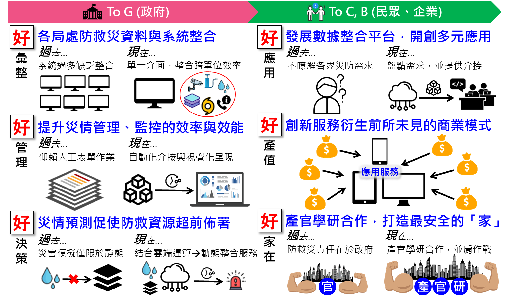
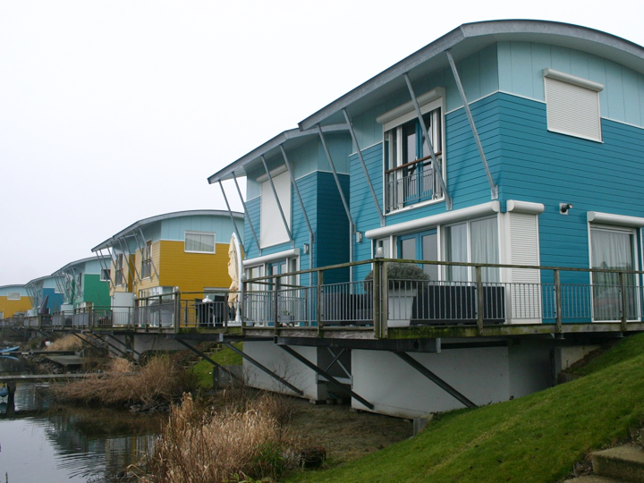

韌性城市個案例分析報告
Table of Contents
1 前言
從都市發展的⾓角度，韌性代表了減少受損程度並縮短回復時間。自1980年年代起，韌性的概念念逐漸被應⽤用在社會科學如地理學、人類學等相關領域之中，而對於韌性城市較明確的討論是開始於2003年Godschalk的Urban hazard mitigation: creating resilient cities1一文。
所謂韌性城市是指一城市擁有足以容納、維持現今及未來社會、經濟、環境、科技發展所帶來的壓力，基礎建設規劃能在未來仍能發揮必要的功能。同時，城市必須將針對氣候變遷危機議題做規劃，並增進在基礎建設及自然環境層面的調適能力2。
韌性城市的打造是一個不斷探索、學習、修正的動態過程。而學習的來源除了從自身過去發生的經驗中吸取養，更主要的學習對象係來自其他城市的發展經驗，藉由與不同地區、面臨不同潛在災難威脅的城市間進行相互比較，學習這些城市所採取的策略及其成效，對處於打造韌性城市初期的城市是十分重要的。這也說明了為何各城市積極參與國際性的城市聯盟，如C402，ICELI3等，藉由經驗交換與資源共享，來推動更為韌性的都市發展。
打造韌性城式過程中對於其他城市開發經驗的借鑑並非完全複製他地的操作經驗，而應考慮地方特性(如環境特性，文化背景，空間治理架構，發展願景)，將他地的經驗消化學習，進而轉換為符合當地需求的策略與規範，完全的複製不僅無法確保城市變得更韌性，更可能是一場災難3。
2 韌性城市的相互學習交流
世界百大韌性城市（100 Resilient Cities，以下簡稱100RC）是為紀念洛克菲勒基金會100周年所發起的國際團體，目的在協助建構21世紀城市在面對環境，社會與經濟等多方變異之下持續發展，並面對新衝擊的能力。100RC不僅需分析災難本身，還要在社會脈絡中掌握其發生原因並尋求解決方案，為此基金會將資助成員城市聘請首席韌性城市運營長（CRO, Chief Resilience Officer），並提供專業諮詢、軟體等支援，以提高成員城市的災後恢復重建能力4。
100RC的目標，一如洛克菲勒基金會總裁 Judith Rodin 博士所說：「雖然全球各城市無法預測接下來會發生什麼突發事件，但可以對其進行規劃，從中吸取教訓並在事後實現發展。這就是恢復力的關鍵。100 Resilient Cities 將幫助各城市採取創新型方案，即建立應對作為21世紀特徵的物質、經濟和社會挑戰的恢復力。」5
不同的城市因其不同的人文與地理因素而各有其發展樣貌，為了讓各城市間能有相互對話、進行資訊與知識交流，100RC提出了以如下四個面向的城市韌性架構(City resilient framework):
- 健康與福利(Health & Wellbeing)
- 經濟與社會(Economy & Society)
- 基礎建設與環境(Infrastructure & Environment)
- 領導與策略(Leadership & Strategy)
希望能協助城市就以七韌性城市的七項特質進行自我審視：
- 具彈性的(flexible)
- 額外的(redundant)
- 強壯的(robust)
- 有資源的(resourceful)
- 能反思的(reflective)
- 包容的(inclusive)
- 整合的(integrated)
100RC並不要求成員提供審視結果，而是協助並鼓勵會員城市提出城市發展的韌性策略(resilient strategies)，以策略為核心，建立知識交流與對話的協力機制6。
在100RC的眾多城市中，有些城市與台北市面臨相同的潛在天然災難威脅、有些與台北市有同樣的行政角色、有些與台北市的未來發展有相同的願景，有些與台北市有類似的城市結構，以下即簡介其中可為台北市發展韌性城市過程中借鑑參考的城市開發特色。
3 台灣各韌性城市簡介
台灣位處太平洋與歐亞大陸交界地帶，深受海洋與大氣交互影響，加上緯度、季風與島內地形垂直變遷度大，氣候變遷對台灣影響甚為顯著，其中尤以颱風夾帶龐大水氣引發洪患使台灣之經濟、環境、生命安全數度面臨嚴重損失。其中「都市型洪災」尤其是此極端氣候所造成最具挑戰性的衝擊型態之一，尤其伴隨著流域開發的都市化進展，發生災害風險逐漸增加。也因為這個原因，減少淹水所帶來的災害、快速從災害復原、打造「不怕淹水」的城市幾乎是各城市的首要策略。
要了解「韌性」在水患治理中的意涵，得先了解什麼是韌性。韌性，是指一個系統在變動中透過自我調適而存續的能力，是系統在面臨「變動中」透過調整系統的應變能力。特別強調「在變動中」，因為韌性是面臨「變動」時的一種系統特質（「變動」可以是環境變動，例如地震或氾濫，也可以是社會變動例如戰爭或經濟蕭條），這個概念的基本脈絡就是「如何因應變動」。若變動不存在，就沒有討論韌性的意義7。
因為討論韌性的重點是「變動」這個脈絡，因此以韌性為目標的水患治理，重點就不該是防洪（排除任何環境變動），而是避免讓淹水（環境變動）造成災害。防洪設施的設置是讓城市不淹水、不必經歷環境變動，所以防洪設施讓城市在大雨來時，不需要做任何調整，一般市民也不需要有應變能力；防洪，是一個「抵抗」（resistance）的概念，而不是韌性的概念7。
3.1 新北市
3.1.1 新北市政府推動防災型韌性城市的理念
新北市政府認為城市治理常橫跨數機關，而為提升效率並讓決策者清楚掌握情況，各方訊息整合與整體分析相形重要，因此在導入資通訊技術解決城市公共問題、建設智慧城市時，更強調內部聯繫、系統整合與資料介接串流，作為政府治理的核心事務。因此，充分運用公部門所擁有之龐大資料，提供業務單位或各級主管進行決策時有充分的參考數據，著重將數據整合及支援決策系統開發列為發展智慧城市之重要項目，希望藉此提升決策精準度及指揮或派遣效率。
新北市政府推動運用智慧化科技強化城市治理的成果也獲得肯定，例如2017年以「BIM 4.0－雲端智慧建築作業平台」、2018年以「新北動健康資訊系統平台」及「全方位3D 科技維安網」、2019年以「全災型智慧化指揮監控中心－危害預警與智慧決策系統及物聯網應用」，連續三年獲得榮獲
新北市政府近年在防災推動的重點工作包括「整合型防災社區」、「新北市減災對策2.0方案」、「推動企業防災」、「透水保水城市」、「落實安家固園」、「強化山坡地社區防災」、「災害潛勢整體調查更新」、「建置全災型智慧化指揮監控中心」及「強化保護避難收容災民隱私」等創新措施。2019年獲獎的「全災型智慧化指揮監控中心－危害預警與智慧決策系統及物聯網應用」是以數據整合及分析應用為基本架構，輔以整合水利、工務、農業及消防等機關相關防災資訊，藉由串接雨量、坡地災害、土石流、地震等資料，開發各種預警模式，例如市區淹水熱點、預報降雨量時段與地區，以供指揮官辨別各區受災嚴重度及掌握各類災情分布，並可提前部署防患於未然。
3.1.2 新北市「全災型智慧化指揮監控中心」
新北市政府自2017年開始規劃、整合中央與地方災害即時資料庫，與中興工程顧問社合作，建立大數據、視覺化數據平台，透過如路樹倒塌、積水、道路封閉紀錄，在災期管理環節，運用長條圖、圓餅圖，以顏色與形狀標示出災情的輕重緩急，讓管理者在地圖上能一目瞭然災情密集的區域，進行資源上的調度等；在災後的修復與工程改進方面，若某地區常淹水，亦可便利進一步檢驗路平、排水系統等。 2018年則進一步從「颱洪災害」著手建置「全災型智慧化指揮監控中心」的雛形，為全國首個應用在災害應變中心處理重大災難的決策預警系統。系統架構分為8：
- 資料端系統 智慧防災資料平台系統(EDP, Emergency Data Platform)，係彙整與收集各防救災相關情資、災情、資源與環境監測資料，並提供資料交換服務。交換服務；
- 應用端系統 颱洪災情即時預警監控系統(EDP-DWS, Disaster Warning System)，透過資料視覺化、網路地圖技術等，建立客製化功能以輔佐決策。
Figure 1: 新北市「全災型智慧化指揮監控中心」系統架構
在系統建構初期，新北市嘗試應用大數據分析及資料科學等最新技術，開發出災害預警模式，提升整備應變能量，使新北市災害防救體系更加健全、完備；後續進一步透過產官學研密切合作建置「坡地災害」、「土石流災害」、「大規模停電災害」及「震災」等資訊平台，整合中央與地方機關的即時資料庫，並建置颱洪災情預警系統。
「全災型智慧化指揮監控中心」建置後，可帶來三項主要效益8：
- 「好彙整－各局處防救災資料與系統整合」：本系統整合中央與地方情資共達67項資料，簡化了傳統作業程序，以減少跨單位各資料調度時所需耗費的人力與時間。
- 「好管理－提升災情管理、監控的效率與效能」：依本市災害管理作業程序與經驗客製化，打造創新的災情管理與監控檢視系統，有效地提升對於災害的感知力與掌控力。
- 「好決策－災情預測促使防救資源超前佈署，打造最安全的「家」」：本系統具備淹水災情預測功能，可提供未來受災地段情資，供下達資源超前佈署的決策，以利災前防範與提早預警，進而使災害損失降低。

Figure 2: EDP系統預估帶來的三項主要效益
目前新北市「全災型智慧化指揮監控中心」已整合中央與地方的67個防災資料庫與8萬筆即時影像監控數據，具備災前預警分析、災情視覺化分級管理、多元災情影像等功能，能透過1,300套即時影像監視系統，結合新北市區852個容易淹水的區域，在48小時前預測淹水的地點，提供包括「災情預警」、「災害報告視覺化」及「災情預測」等功能：
- 災情預警 透過智慧防災物聯網提供各項即時監控數據，簡化人力通報災情的程序；
- 災害報告視覺化 將所有即時發生災情分成一般、嚴重、結案與未結案，供指揮官一目瞭然辨別各區受災嚴重度及掌握各類災情分布，並可即時比對單一災點現場與平時未受災前照片，清晰、明確展現災害空間、時間及災況的歷程；
- 災情預測 涵蓋「淹水預警模式」整合二維淹水模式與新北市易淹水災點，能提前展現市區淹水熱點、「在地化氣象整合圖台」整合氣象圖資與電子地圖，提供預報降雨量時段與地區。推估新北市各區在未來48小時淹水範圍與深度及產生潛在淹水熱點圖，預先部署抽水機等救災能量。
「全災型智慧化指揮監控中心」應用 Web-GIS、空間大數據、資料視覺化與災害模擬，並結合災害應變中心經驗打造創新功能，例如全災情動態視覺化為災情管理利器，能由淺至深調閱和呈現災情地圖；淹水災情預測能繪製災情預測地圖，以利超前預警與防範。前述建置試圖解決重大災害發生時，整合四面八方複雜的災害情資，整理為有效的決策建議。特別是經由災情視覺化分級管理功能輔助指揮官下達決策命令。透過防災科技應用，建構新北市成為帶有智慧元素的韌性城市。
3.1.3 「新北災訊 E 點通」
建置「全災型智慧化指揮監控中心」後，新北市政府也在便利市民運用上，搭配開發24小時客製化「新北災訊 E 點通」提供民眾各項即時災害情資，如停班停課、停水停電、水門關閉、水庫洩洪、即時雨量、水質濁度等資訊，讓民眾可獲得即時災害資訊，提早準備。
2019年透過與臺灣大學合作，增加48小時前淹水預測、多元災情影像等功能，可提前告知市民最新即時訊息。而民眾也可以透過新北防災資訊網、「新北消防行動」App、臉書專頁「我的新北市」和「新北消防發爾麵」，及「新北市政府」LINE 官方帳號等各種多元管道，獲知各種即時且重要的防災訊息。讓民眾隨時透過手邊行動科技裝置掌握周遭狀況。
未來則規劃應用人工智慧與物聯網整合技術，打造自動化即時監控模組與全災預警模組，如利用網路新聞、社群與閉路電視自動蒐集災情、建置「坡地災害」、「土石流災害」、「大規模停電災害」及「震災」等資訊平台，持續整合中央與地方機關的即時資料庫、颱洪災情預警系統，提供民眾各項即時災害情資，如停班停課、停水停電（復水復電進度）、水門關閉、水庫洩洪、即時雨量、水質濁度等資訊，新北市政府可達成監控與超前預警，促成智慧化決策輔助；新北市民眾則可獲得即時災害資訊，提早準備。
除災時的監控與預警之外，新北市政府也運用「全災型智慧化指揮監控中心」輔助進行更逼真、具臨場感的防災演練。例如導入水災電子兵棋台，並運用最新科技─災害告警系統發送「疏散避難警報」細胞廣播（CBS）、區域簡訊（LBS）、國家災害防救科技中心災害示警 LINE 訊息，模擬災害發生時如何在第一時間讓市民掌握各項防災資訊，此外挑選戶外場地安排大規模疏散、災情查通報、新聞發布、橋梁斷裂搶修、前進指揮所架設、地下管線洩漏及毒化災搶救、直升機吊掛救援、收容安置及復原等實兵演練項目。
而新北市「全災型智慧化指揮監控中心」2018年底獲得「107資訊月百大創新獎」及「2018雲端物聯網創新獎」二項全國性的資訊大獎，2019年「第6屆智慧城市論壇暨展覽」則獲得「創新應用獎」獎。此外，新北市也於2018年行政院災害防救業務訪評，榮獲第一組（直轄市）第一名績優殊榮。
3.1.4 以韌性城市作為參與國際城市交流主題
對內，新北市政府極力完善運用智慧科技監控災害的「全災型智慧化指揮監控中心」，對外也將初步成果之作為亮點，參與國際主題型的城市交流─「危機管理網」（Network for Crisis Management）。
「危機管理網」由日本發起成立，共有14國家、15個城市參與，2002在東京第一次舉辦，後續則由各會員國輪流舉辦國際交流會議，透過各國經驗交流共同提升災害防救實務運作專業能力，並培養危機管理人才與強化彼此的危機管理能量。
新北市政府有鑑於國際交流的重要性，於2010年始積極爭取加入會員城市，並於2018年3月正式成為會員城市。2019年於菲律賓舉辦研討交流會議，分享新北市的科技防災成果，包含智慧防災、防災教育與緊急救護等智慧系統，特別針對「全災型智慧化指揮監控中心」運用雲端科技，打造智慧安全城市的措施進行報告，和馬尼拉、東京、首爾、臺北市、新加坡、雅加達、吉隆坡、布魯塞爾等參加者交流經驗，汲取其他城市的經驗及維繫關係，以推動國際救災支援與合作，精進新北市危機管理政策與措施。
3.1.5 脫煤者聯盟
為減緩氣候變遷與環境污染問題衝擊，新北市積極執行永續韌性城市策略，侯友宜市長並於108年8月7日宣示於108年完成「燃煤鍋爐退場」、「瀝青業燃料油改氣」及111年完成「燃煤汽電共生機組退場」等3項關鍵政策，持續朝向無煤城市目標邁進。相關管制作為已獲國際肯定，日前新北市接獲「脫煤者聯盟」（Powering Past Coal Alliance, PPCA）通知正式成為聯盟會員，成為臺灣第一個加入該聯盟的城市。該聯盟將於今年12月在馬德里舉辦的COP25周邊會議正式向國際城市宣布，未來新北市將與英國、加拿大等各國聯盟成員共同攜手對抗氣候變遷。
「脫煤者聯盟」係由英國和加拿大政府共同成立，致力於將燃煤發電轉換為乾淨能源，透過與各國地方政府及組織共同推動老舊燃煤電廠退場，逐步停止使用燃煤以減緩氣候變遷衝擊，並協助實現巴黎協定目標，控制地球氣溫的上升幅度在與「前工業時代」相比最多2°C之範圍。該聯盟現有91個成員，包括32個國家，25個地方政府和34個企業組織，新北市為臺灣第一個，也是繼韓國忠清南道後亞洲第二個加入聯盟的地方政府成員，將持續於國際平臺分享新北市減緩氣候變遷及燃煤退場經驗，增進互動與交流9。
3.2 桃園市
桃園地區有冠於全臺灣的埤塘數量及眾多的河川，有農業利用灌溉水路並兼有都市計畫雨水下水道貫穿，有中央管及市管河川並兼有地方區排流經桃園，作為水資源、韌性城市相關的智慧解決方案實施城市有其優勢。
桃園市水務局自2015年起逐步開發智慧化管理系統，主要是藉由整合各類水利數據，掌握水源來向與去向，應用大數據及雲端運算分析，達成降低淹水風險與損失並讓水資源供需調度發揮最大效益，逐步形塑桃園市成為不缺水、不淹水及親近水的環境，成為具有防護力、抵抗力及恢復力的韌性城市。
3.2.1 桃園市「水情防災資訊系統」
桃園市水情資訊系統整合各單位防災應變資訊及圖資服務，提供桃園市政府水務局之防災應變平台。例如水務局在防災應變期間亦會機動發布防災公告資訊，將桃園市各地防災人員回報之淹水地區、封橋封路等相關資訊即時公告於網頁上，民眾可隨時上網了解完整防災應變資訊。
水務局也開發「水情看桃園 App」，主動推播氣象局大雨特報、颱風資訊、水庫洩洪、全桃園市河川水位警示、地震預警、公路中斷、土石流警告、淹水通知與空氣品質等訊息，並透過適地性服務主動通知使用者所在位置方圓500公尺內的相關警戒訊息，同時可透過動態的水情地圖，即時了解所在位置周邊的災情位置與情形，具有鄰近避難場所定位導航功能，若遇到災情發生時，民眾可第一線主動回報災情，即時掌握桃園市的即時氣象與各種防災資訊，主動避災減災。透過「水情看桃園」App 將資訊公開，讓桃園一日生活圈內的民眾都能取得在地化及客製化的服務，藉由設計活潑之頁面及多樣化生活防災功能，提供民眾自主避災、減災所需資訊，將桃園打造成安全永續的韌性城市。
3.2.2 桃園市「下水道雲端智慧管理系統」
為使水務局能藉由地理資訊管理系統充分掌握下水道系統的最新狀況，以有效進行維護及修繕等經常性之工作，須將下水道工程資訊藉由統一的資料格式制定及彙整，且針對轄區內下水道圖資進行建檔工作，並採用地理資訊化管理，以整合桃園市之圖資及有效處理複雜龐大之資料，進而提升行政管理效率。整體系統架構包含下水道 GIS圖台、雨水下水道業務模組、污水下水道業務模組、App 等。系統涵蓋範圍包括桃園市六座水資源回收中心、污水下水道人孔/管線超過7,500座/段、雨水下水道人孔/管線超過7,700座/段。透過「下水道雲端智慧管理系統」推動執行，藉由資料的完整彙集、資訊輔助管理系統的建置，作為雨污水下水道推動永續發展之基石，達到下列目標與效益：
- 設立標準 編撰訂定「桃園市雨、污水下水道地理資訊管理系統資料庫檔案格式及建置規範」，作為雨污水下水道建設資訊彙集之標準；
- 完備資料及資訊化 規劃設計雨污下水道資料庫，協助下水道新建及既有資料與圖資之審核、建置、諮詢並匯入資料庫，以完備資料庫內容；
- 業務數位化 落實工程管理、落實污水廠管理、落實清疏管理、提升民眾服務等業務目標，分別建置雨、污水下水道各項相關業務管理功能模組，作為推動雨污水下水道建設業務管理及未來營運之高效益輔助工具；
- 民眾業務申請線上化 將下水道相關民眾申請業務，如建物接管申請、案件報修等功能，進行業務申請線上化，透過網路申請方式提升民眾申辦時效；
- 物聯網與行動輔助 透過物聯網將現場設備訊息即時回傳至水務局，並將資訊透過 App 介接可即刻查詢相關資訊；亦可透過雨污水下水道行動查報、水資源回收中心實況查詢 App 系統開發，提供管理人員現場即時性資訊查詢工具，藉由行動數位化工具提升營運效能與時效性；
- 資訊流通 藉由桃園市與地理倉儲系統之介接作業，達到資訊流通與最大化利用。
Figure 3: 桃園市「下水道雲端智慧管理系統」建置內容
透過物聯網感測裝置，下水道管線的訊息會即時傳回水務局，再經由App 介接直接在手機查詢。也另外開發雨/污水下水道的行動查報、水資源回收中心的實況查詢 App，讓水務局管理人員藉由行動工具，提升營運效能與時效性。這套下水道管理資訊系統也銜接下水道工程建設成果的資料，能有效掌握施工的情形，輔助工程管理，減少不便民的時間。此外，該系統也提供民眾線上申請下水道相關業務，如建物接管申請、案件報修等，提升民眾申辦時效，並藉由桃園市與地理資料系統的介接，發揮資訊流通與利用最大化的目標。
3.2.3 桃園市「智慧化地下水動態管理機制」
桃園市政府為遏止境內超抽地下水可能導致地層下陷，並即時監控地下水位狀況，2019年頒布「桃園市地下水水權裝置量水設備自治條例」，以胡蘿蔔與棍子雙管齊下的方式，一方面掃蕩「黑井」，一方面則辦理「桃園市智慧地下水管理推動計畫」，針對（1）水權狀核發量符合「桃園市地下水水權裝置量水設備自治條例」之年引用量達10萬噸以上之工業用水與其他用途者；（2）水權狀每月核發量超過1,000噸用水量者，給予補助安裝電子式水量計與無線傳輸設備之智慧水表。

Figure 4: 桃園市「智慧地下水管理推動計畫」運作機制
桃園市政府經由在地下水井安裝電子水表、電表及水位計，將即時地下水情資訊傳送至「桃園市智慧地下水管理系統」，簡化傳統抄表程序，提供使用者一條龍式用水填報功能，並進一步將所蒐集到的數據進行人工智慧加值分析，提供水務局決策支援建議。換言之，水權人可透過物聯網技術掌握抽水情況，達到智慧地下水管理目標，藉以永續保護地下水資源，也讓桃園市產業永續經營。
此外，於2019年持續辦理「108年度桃園市智慧地下水管理推動計畫」，為2017、2018年度的延續性計畫，隨電信傳輸技術的發展，除將持續接收前兩年布建的前端感測資料外，亦擴充功能及模組，並整合外單位資料或網站。擴充的項目包含：
- 智慧化地下水水情預測模組，為使管理上更為前瞻，加入未來水情預測的資訊；
- 主動警示功能擴充，使用水人及管理者能更為即時且主動的接收到各種抽水數據相關警示與提醒，以利及早處置；
- 用水量自動填報功能，使用人多一種每月填報用水量的選擇，且比以往更快速方便整合及提交；
- 智慧決策支援模組，為了在有限資源下，公平均衡地分配有限資源，在兼顧產業開發與不造成環境衝擊下，進行妥善分配。
3.2.4 桃園市「下水道智慧監控系統」
桃園市榮獲「2020智慧城市創新應用獎」的「下水道智慧監控系統」，主要在「水情防災資訊系統」的基礎上進行開發，讓桃園市的水情感測網建置更完善的佈局，主要在地面下的下水道裝設水位監測站，搭配已設置空中的（降雨量大小）、地面的（路面積淹水深度）及河川（河川水位高度）感測站，建構出完整水災決策支援系統。
下水道智慧監控系統整合區排水位資訊、路面淹水監測資訊及雨量站資訊，進行多元水情淹水成因分析。在維護管理方面，包含異常水位及水質通報、淤積通報、管網狀態分析。透過下水道監測系統發展及應用，以期降低防災及維護管理之人力成本。桃園市下水道智慧監控系統建置之主要目的為保障民眾生命財產之安全，民眾可第一時間掌握各項警戒訊息，進一步減災、避災，降低民眾生命財產之損失。
桃園市下水道系統總建設長度已達696公里，水務局獲內政部營建署補助經費辦理下水道智慧監控系統，並以桃園區、中壢區、龜山區、大溪區及龍潭區等人口密集之防汛重點區作為示範區域，設置雨、污水下水道監測站143站、水質監測站7站及路面監視站30站，以期即時瞭解下水道系統運作狀況，實施主軸在重點區下水道系統設置水情監測站，掌握下水道水位變化，並自動導入鄰近雨量、區排水位、路面淹水等資訊，研判積淹水可能之成因，並透過大數據分析，應用於都市防災與維護管理，以期降低維運及巡檢人力成本，提供應變長官進行調派人力機具等決策支援重要參考資訊。
下水道監測設備包含數位資料記錄器、監測模組、通訊、電力等設備，為避免開挖馬路影響交通以及提升建置效率，前述儀器設備均架設在下水道人孔內，快速布建將影響降至最低，透過 NB-IoT 通訊模組回傳資訊，大幅減少通訊費用，系統建置完成提供民眾最即時之自主防災應變資訊。下水道智慧監控系統整合至水務局現有之防災應變流程中，提供災前整備、災中應變重要資訊，作為進行救災資源調派決策考之用。
3.3 台中市
台灣颱風豪雨頻繁，每年到了梅雨季，以及夏季颱風期，暴雨、淹水等情形都是各地方政府在防汛工作上的一大挑戰；加上近年極端氣候加劇，導致淹水災害事件更常發生，為因應未來強降雨可能造成的水患威脅，並增加都市防災的應變能力，臺中市政府水利局採用物聯網技術，結合大數據分析，積極發展「臺中市智慧防汛網推廣建置計畫」，讓水利防災與預警系統結合，能在防汛期間快速掌握災情資訊保障市民生命財產安全。
3.3.1 物聯網結合大數據
「臺中市智慧防汛網推廣建置計畫」，採用物聯網技術，結合大數據分析，調查臺中市各行政區易積淹水點位，設置淹水感測設備，並整合7組固定式抽水站，建構智慧防汛網，可全時監控路面積淹水狀況，即時指揮調度相關人員進行緊急應變處理；更同步開發智慧防汛系統，收集全市水情監測資訊，運用電子地圖技術，快速展示各積淹水點位的現況，推估淹水影響範圍，進而估算所需抽水機組的數量，作為決策參考，讓防災人員能隨時隨地掌握淹水地點現況，提升防汛效率。
透過智慧防汛網，還可將抽水站的水位高度、抽水機組的運轉狀態同步傳輸到臺中市政府水利局的水情中心，相較以往，更容易掌握現場當下的降雨情況以及河川水位變化；民眾也可以透過「臺中水情APP」查詢即時狀況，達到避災或減災作用。此外，台中市也逐步在易淹水的潛勢地點，設置水位計，利用壓力式感測器，偵測淹水高度，再透過物聯網把淹水的資料回傳，就可以很快速地透過廣播系統或是平台，將訊息通知地方，有效整合即時防汛應變事宜10。
3.3.2 雨水下水道智慧監測
智慧防汛除了地面上可見的河川水圳，雨水也需要透過雨水下水道來排水疏導，因應汛期降雨量暴增，為加強排水順暢，中市府水利局工作人員每年都會進行下水道縱走普查，但在下水道巡檢有一定的風險，使用了智慧監測系統之後，能更全面掌握雨水下水道情形，也降低風險成本。
中市府水利局在雨水下水道裝設監測設備，透過雷達波感測箱涵水位，未來將能從監測平台得知雨水下水道的流量及淤積量，除了量測水位，系統還可以偵測淤積泥量和沼氣，判定是否有家庭廢水偷排，有效降低淤積造成的淹水風險。
隨著極端氣候影響，短時強降雨等自然災害無可避免，有了智慧防汛系統後，就能即時得知河川及易淹水地區的積淹水情形，超前部署防汛設備及人力，而這些數據持續納入資料庫內，中市府水利局運用創新防汛科技守護家園，提高整體汛期防災安全，讓臺中朝安居城市邁進。
3.4 台南市
工業局自104年起與臺南市共同發展之智慧防汛監控服務，逐步設置水閘門和水位監測器，以利市府即時掌握降雨量和水位警報信息，進而發佈必要的疏散指示。
台南市地勢低平，每逢汛期常有洪水災情，臺南市長黃偉哲要求運用物聯網技術加入防災，以發揮預期警訊功能，達到預防性疏散撤離及遠離災害的目標，他表示：「治水沒有最好、只有更好，不放棄任何一個會淹水的地方」，為有效掌控淹水狀況及監控大型移動式抽水機，臺南市政府與水利署合作執行智慧防汛網計畫，利用現代數位傳輸科技，融合防災科技與數位經濟，發展兼具水情資訊傳播與防汛監控的智慧防汛網平台，強化市府水災災害應變與決策能力，減低災害風險與損失，落實黃偉哲市長在今年推動的「3個提升、3個永續」施政策略中的「環境永續」，是全國第一個運用物聯網技術在防災的縣市政府11。
Figure 5: 臺南市智慧防災資訊系統平台(臺南市政府水利局)
3.4.1 智慧防汛網計畫
台南地勢近60％低窪且部份區域臨海，容易急降雨，極端天氣衝擊下，引發淹水風險及挑戰。因此，台南市與水利署合作執行智慧防汛網計畫，利用現代數位傳輸科技，融合防災科技與數位經濟，發展兼具水情資訊傳播與防汛監控的智慧防汛網平臺，強化市府水災災害應變與決策能力，減低災害風險與損失。
水利局從2018年起與水利署合作辦理智慧防汛網計畫，於臺南市易積淹水路段裝設「路面淹水感測器」，並搭配智慧防汛網建置之物聯網傳輸技術，即時回傳監測水深，讓防災人員在第一時間掌握資訊即時通報12。
此外，台南首創整合多元感測，並提供防汛即時模擬，採用人工智慧(AI)技術，以台南歷史事件淹水、各傳感器即時回傳資訊、每小時產出未來 3-6小時淹水模擬預測。此防災預警資訊，透過「台南市水情即時通」APP及Line Bot水情機器人聊天，主動推播資訊給民眾，並將防災機制納入鄰里長預警系統，必要時進行通知預警性避難及疏散作業，落實自主防災。研考會趙卿惠主委表示，台南市政府相當重視智慧科技應用與城市治理落實，透過智慧雲端防汛決策平台及視覺化空間儀表板，整合既有防汛模擬成果、感測裝置及自主防災單位，即時產出統計圖報表，大幅增加防災決策全盤掌握性與效率，讓橫向跨單位串聯、垂直應用延伸，都能在防汛前、中、後各階段利用資訊平台機制，讓防災資訊公開透明，使民眾、業務人員及決策者能在平台即時掌握台南市各地的水情監測資料，以創建防洪最佳實踐，提升預警應變能力13。
水利局表示，淹水感測器資訊同步公開於「臺南水情即時通」APP，可供一般民眾查詢，民眾及防災人員可透過APP即時掌握路面淹水感測器之淹水資訊，淹水感測器達警戒值時，APP將主動推撥訊息給民眾，讓民眾及防災人員能在第一時間掌握資訊即時通報防範，以降低積淹水災情12。
3.4.2 運用預警系統 整合多元災情資訊
另外，台南市有大型移動式抽水機450台，是全國最多，為即時了解抽水機的操作狀況，水利局已在其中120台裝設感測器，可將抽水機的油料使用狀態等資訊回傳智慧防汛平台，以進行監控，當油料不足時，簡訊會立即通知應變人員補充，讓抽排水不中斷，提高應變掌控度。台南市建置的淹水感測器及移動式抽水機資訊都可在台南市智慧防汛網平台上查詢，並同步上傳至水利署水資源物聯網。
黃偉哲市長上任後積極爭取中央補助智慧防災經費，今年再獲水利署補助1,680萬元，將在易積淹水地區再增設150支淹水感測器及安裝前端感測設備於150台移動式抽水機，完成後感測設備將是全國最多。
未來在防汛作業上，將持續運用物聯網技術，並結合智慧防汛網平台監看，市府防災人員可隨時掌握台南市各地淹水狀況，若再搭配淹水預警系統，將可達到多元災情資訊整合目的，讓台南市成為幸福舒適、環境永續的韌性城市11。
3.5 高雄市
3.5.1 「淹水感測器」
高市水利於2020年召開的防汛整備會議中邀請災害防救辦公室與會以提升防汛應變效率，同時盤點各項雨污水道在建工程的防汛作為超前部署，並透過智慧防汛網新設六十支路面淹水感知器，在積水初期立即感應通報。水利局除針對六十八處易淹水地區新增降雨預警機制，新設六十支「路面淹水感知器」，並在尚未完成改善處評估架設移動式抽水機組待命，指派專人現場操作，或採臨時排水路方式導引，避免逕流集中造成積淹水14。
Figure 6: 利局新設的路面淹水感知器（紅白標桿）
淹水感測器是自動連續監測，每十分鐘傳回一次資料，準確度高，整合快速，也能記錄淹水到退水的完整歷程。淹水感測器的主要功能是顯示淹水時的資料，沒有預報功能，卻能提升預測準確度。面對極端氣候西南氣流、熱帶性低氣壓、午後熱對流等突發狀況，氣象觀測技術仍無法準確預判的情況下，水利局透過智慧防汛網新設的六十支「路面淹水感知器」可以在積水初期立即通報，讓民眾提早安裝防水閘門或堆置沙包，儘量減少市民財產損失。
同時針對部份抽水站加強抽水功率，尤其楠梓右昌低窪地區特別增設四台2CMS（立方公尺／秒）沉水泵及一台發電機，並加派專人全時操作。
水利局長李戎威認為，極端氣候下強降雨所造成無法避免的積淹水情形，民眾應該改變思維，由不淹水轉為「不怕水淹」，也就是要有一定程度的淹水容受力。
3.5.2 以智慧科技引導韌性城市
傳統上，韌性城市觀點的討論，主要偏重在城市面對極端氣候所帶來不確定衝擊（如天災、社會老化、能源危機）的容受力及回復力。高雄市未來預計透過智慧科技引導將韌性城市的主張，落實在場域打造、技術導入、在地創新等，進而帶動知識與科技的應用。韌性城市整合智慧城市所附帶的技術與知識，除能持續帶動城市經濟發展，也可運用當前科技的力量，尋求更高品質的都市生活，同時又減少城市發展對地球資源的消耗與環境的破壞，打造城市對抗氣候變遷衝擊的韌性能力。換言之，在智慧城市架構下，高雄市可朝向韌性城市發展，運用科技解決市民關注的「強降雨造成水質惡劣與淹水問題」、「城市水患造成基礎設施損壞與生活機能癱瘓」、「降低溫室氣體排放以減少地球暖化」15。
4 各國韌性城市簡介
4.1 亞洲
4.1.1 日本
- 日本國土韌性計畫
日本國土韌性計畫主要界於戰略性計畫及執行策略之間，其目標在於開發之中能夠降低風險，如基礎設施、交通設施，甚至是都市再生；為因應海嘯，高速公路的興建刻意避開海岸線，退至內陸進行開發，強化其功能性而達成本身基礎環境耐災之特性。對於台灣來說，日本其實就是一個最佳的模仿對象，因 921 集集大地震所制定的災害防救法以及相關計畫，如基本計畫、業務計畫、地區災害防救計畫；因 311 東日本大地震而制定的國土韌性基本法以及相關的行動計畫、區域計畫等。
就因應災害對象本身而言，兩國計畫都朝向全災型考量；但在組織體系方面，台灣還是處於無法將各部門、機關作水平整合，亦缺乏上位計畫或與行政院層級之協調機制，而日本則將國土韌性計畫提升至國家 安全層級，設立國土韌性推動本部，其對中央政府各部會進行協調、指揮並指導地方政府。為避免淪為過去全國綜合開發計畫偏重硬體設施， 其國土韌性計畫兼顧結構及非結構式的指導性原則並協助行動計畫研訂各方案脆弱度評估16。
國土規劃的過程中，兩者除了都將韌性防災的內涵結合國土計畫之外，在國土計畫制定時所面對的課題也都相當一致，如人口、經濟、區域發展及資源保護等。雙方也都在無法預期未來的情形，曾上演過摸石渡河的策略因應，台灣目前的國土計畫已發布實施，未來的目標逐漸下至地方政府所要規劃的直轄市、縣(市)國土計畫，實際上規劃原則可能與土地使用管制各行其是，減災規劃無法相對應落實。日本則是近年來遭遇巨災的頻率明顯增多加上要求均衡開發的國土規劃思維，除了轉型既有的國土計畫，也新立了在國土體系之下，如同特別計畫一般的國土韌性計畫。
對於台灣更重要的是國土計畫本身如何整合各部門、規劃單位，在執行的過程達成國土防災的目標。整體比較之後發現，台灣還是比較針對土地利用、開發限制的方式看待國土規劃，本身缺乏戰略性的指導， 也沒有長遠年期的一個想像，未來希望透過更多學習以構成國土韌性之目標17。
- 地球溫暖化防止活動推進中心（JCCCA）
面對本國環境的變異現象，日本自簽署「京都議定書」以來，即動員全國資源積極投入地球溫暖化防止工作，經過多年的努力與推動，現在日本國內各大城市均設有地球溫暖化防止之政策推動中心或組織，政府單位並設有專責機構。
針對 1999 年實施的「溫室效應策略促進相關法」，日本各地皆陸續成立地方性的推進會(或稱推進中心)，且不隸屬於全國地球溫暖化防止活動推進中心（JCCCA），但組織之間具有夥伴合作關係。各地方政府依規定在地方成立推進會(或稱推進中心)，一般而言皆由在地本來就存在的非政府組織（NGO）推動，進行地方性對抗暖化與節能減碳之推廣活動。相對的，全國地球溫暖化防止活動推進中心（JCCCA）則是負責全日本類似之推廣活動，並作為各地區性推進會(或稱推進中心)的經驗交流平台與資訊中心，從其組織背景來看，基本上係具有半官方色彩的非政府組織（NGO）。
由於全國地球溫暖化防止活動推進中心（JCCCA）的行動係以推廣教育為主，包括配合政府政策的宣傳與推廣活動、辦理相關演講與座談會等措施，結合各地區性的推進會(或稱推進中心)、社區團體、非政府組織（NGO）、學校社團、私人企業等，以各種具有特色與創意的方式，且可以從生活中確實執行的節能減碳行動，讓參與者能有興趣的可以從活動中學習各種知識，這種推動方法值得我們國內相關單位參考跟學習18。
- 總合治水對策 Taipei
1977 年針對高度都市化流域提出「總合治水對策」，包括河川整備、流域對策及被害減輕對策等。除治理河川及興修下水道外，並運用流域「上游蓄洪」、「中游滯洪」、「下游排洪」、「雨水貯留」及「降低低地土地使用強度」等策略，全面改善易淹水地區之淹水潛勢，也利用既有設施強化之方式，在不增加更多社會成本之下，預期透過既有設施之補強與再生達到都市流域水患減緩、調適之效果19。
東京都隨都市化進展，降雨逕流大增，水害頻繁威脅住民生命財產安全，遂推展「中小河川流域治水計畫」，重新建立下水道的排水標準，將設計標準從 3 年頻率降雨強度 50.0mm/hr，提昇至 15 年頻率降雨強度 75.0mm/hr 以上。除了提高老舊的下水道（排水路）、抽水站的排水標準外，也加入蓄洪、入滲、貯留、系統預測、土地管制檢討等減洪思維，新建地下調節池及雨水貯留管。地下調節池可疏導調節 25％之洪水量。
在建立地下調節池及雨水貯留管的初期，日本政府曾被質疑為何不直接浚深河川，透過增加通水斷面減少水患。浚深河川的難處在於，日本都市化發展飽和，許多河川水道之下已佈滿地鐵、自來水、瓦斯等設施管線，因此改以建立地下調節池及雨水貯留管來提昇排水標準。未來台北市也可能面臨類似問題，加上潮汐迴水的問題，可將地下調節池及雨水貯留管列為長期的規劃目標。惟興建此類設施的人力、時間、經費成本都極為巨大，政府應讓公民更加深入了解此議題，促進未來的政策透明及規劃方向20。
- 雨水貯留浸透技術協會
雨 水 貯 留 浸 透 技 術 協 會 （ Association for Rainwater Storage and Infiltration Technology, ARSIT）成立於平成 3 年(1991 年)，主要任務係關於雨水貯留浸透技術之調查研究、技術基準之出版、事業推廣及普及，以及有關工法及材料之評價與認定等，促進綜合治水對策之推動，並對於水的循環再生作出貢獻18。
- 河川情報中心
訪河川情報中心（FRICS），該中心為非營利法人團體，營運經費由全國 47 個都道府縣及 10 個政令指定市捐贈及贊助，過去、現在及未來該中心皆做為推動水災災害防止與減輕的公益團體。主要任務為蒐集、處理及提供河川及流域等知識與相關訊息，減輕洪水災害與提供較好以及合理的河川利用資訊。由於中心營運經費係由各機關所捐贈，因此中心的運作與主要功能，亦有相關規定須要執行，包括河川流域相關情報之蒐集、處理及提供、上述目的的相關技術開發、相關資訊的交流、推動國際合作與交流活動、基金規範所必須採取的行動等18。
河川情報中心（FRICS）最近幾年的重大成果，分述如下：
- 整合國土交通省目前 26 個雷達雨量站，並進行即時校正及統合運用的開發。
- 整合國土交通省遙測系統並統一採用 XML 資料格式，超過 16,000 站其不同的發展系統整合成單一的系統。
- 水文觀測資料之檢定，提高觀測資料數據正確性。
- 洪水避難地圖的製作。
- 協助中央及地方政府推動危機管理訓練。
- 發展動態洪水模擬，製作即時且可觀看的淹水潛勢圖。
- 成立水情報國土資料管理中心。
- 物聯網資安修法 IoT
日本政府 2018 年底至 2019 年初頻頻針對物聯網資安修法，原因或與 2018 年南韓平昌冬奧開幕式遭俄羅斯駭客攻擊有關，使日本政府全力備戰 2020 年東京奧運。主管機關總務省 2019 年 1 月底修正《電氣通信事業法》，於 2020 年 4 月起要求聯網終端設備須具防非法登錄功能，例如能切斷外部控制、要求變更初期預設 ID 和密碼、可時常更新軟體等，且唯有滿足標準、獲得認定的設備才能在日本上市。此次電信法調整也要求當非法登錄造成「3 萬用戶超過 12 小時」或「100 萬用戶超過 2 小時」故障時，營運商需將該故障視為重大事故向總務省呈報，違者將受行政處分。
此外，日本自 2019 年 2 月底啟動 NOTICE（National Operation Towards IoT Clean Environment）計畫，允許國立情報通信研究機構（National Institute of Information and Communications Technology，NICT）人員可於監督下，嘗試以產品原廠密碼和弱密碼（例如 123456 或 admin 等）登入一般家庭的私人 IoT 設備，並把可登入名單交給相關網路服務商，提醒消費者保護該裝置21。
- 可供台灣借鑑點
在氣候異常下台灣都市河川面臨與橫濱市相同問題，現在所要除要積極完成工程設施外，面對氣候異常應採非工程手段來看待，政府和國人不能想要把災害根治，只能期望把災情降到最低，也就是說，各項基礎建設在災害過後，能夠儘速回復正常，這才是未來防洪治水的新思維。今後台灣可參考橫濱市針對氣候異常之暴雨作為，例如強化氣象預報之準確性、增加河川上游之監測及連繫(氣象、雨量、河川水位及影像)、手機的活用、喚起民眾防災意識(自助)及提昇防洪人員之應急及危機管理能力。
隨著網路攻擊事件影響範圍和損害越趨擴大，物聯網資安提升無疑是所有垂直應用的重要基礎，政府訂定法規一定程度上也希望成為官方認證，故如何讓消費者對產品產生信任感，使「Internet of Thing」不致成為「Internet of Threats」，將是政府和廠商共同面臨的課題。因應未來法規和趨勢，物聯網裝置相關廠商在產品設計階段，應加速導入隱私和數據保護技術，售後亦應提供定期遠端漏洞維護和管理，在獲得政策性商機同時也呼應政府作為，藉以達到產官雙贏局面21。
另一方面，在物聯網資安防護完善前提下，智慧城市的廣大商機將是政府和廠商兵家必爭之地。隨著氣候異常和天然災害頻傳，提升建築、社區乃至城市韌性將如買保險般普遍，而與現代生活密不可分的網路通訊，以及面臨災害第一時間反應的應急準備，將是物聯網可多元應用的領域21。
4.1.2 日本東京
東京地處環太平洋火山地震帶，地震海嘯等自然災害頻發。其狹長的國土特徵一定程度上限制了人口與經濟活動佈局，容易受到突發災難的較大衝擊，因而韌性城市建設對於東京而言至關重要。東京於2014年12月發佈《創造未來——東京都長期戰略報告》，旨在到2030年建設成為世界一流大都市。規劃還提出了兩個具體的發展願景，一是舉辦史上最佳奧運會和殘奧會，二是實現東京的可持續發展。為了保障奧運會賽事的順利召開，東京制定了一系列防地震等自然災害、維護公共治安的應急預案，一定程度上增強了東京的城市韌性。雖然，由於新冠肺炎疫情影響，東京奧運會已延期，但相關基礎設施建設勢必還將繼續進行。同時，可持續發展理念本就與韌性城市建設一脈相承，東京在應對環境問題、氣候問題時也強調提升城市的應急預案水平與危機響應能力22。
東京還提出到2030年要在社會福利、經濟活力、城市基礎設施、藝術文化振興等方面超過倫敦、紐約、巴黎等城市。東京規劃中提出了多項韌性城市建設舉措22：
- 在基礎設施韌性方面 完善主要公路、機場線等交通要道的道路設施建設，增強地區間的可達性。
- 在經濟韌性方面 踐行低碳可持續的發展理念，規制生產企業減少能耗，鼓勵新能源的開發和使用。
- 在社會韌性方面 提高建築抗震抗災的等級，做好應對突發災害的應急預案與準備工作。
- 在制度韌性方面 政府履行好維護公共安全治安的職責，完善治安監控與安保志願隊伍建設[。
4.1.3 韓國首爾市
從疫情期間的通勤率下降影響，讓民眾明顯感受到更健康的城市近在咫尺，以步行或腳踏車等作為替代性交通工具也越受歡迎。由於交通量減少，城市也有更好的空氣品質，這正是機會可以一舉改善交通模式減少溫室氣體的排放。因應韓國的綠色新政，首爾市除了執行綠能政策外，也重新規劃智慧綠色交通政策，規劃無車街道、機器人送貨服務等，並增加腳踏車快速專用道系統，以於2030年達到15%的交通工具為腳踏車的目標23
4.1.4 中國
中國作為世界上最大的發展中國家，人口眾多、資源匱乏、氣候條件複雜、生態環境脆弱，尚未完成工業化和城鎮化的歷史任務，發展不均衡的基本國情決定了中國是最容易受到氣候變化脅迫的國家之一。全球氣候變化對中國經濟社會發展產生了諸多不利影響，成為可持續發展的重大挑戰。中國也是世界上自然災害最頻繁、損失最大的國家，地域間自然條件差異化程度極高，經常遭受各種自然災害與人為災害的影響。這些災害的不確定性與破壞性帶來了巨大的生命和財產損失。2018年，中國自然災害以洪澇、颱風災害為主，乾旱、風雹、地震、地質、低溫冷凍、雪災、森林火災等災害也有不同程度發生。全國1.3億人次受災，直接經濟損失2644.6億元（中國保險報網， 2019）。儘管災害損失佔生產總值的百分比總體在下降，客觀上反映了我國抗災防災水平的提高，但災害損失反映出三個特點值得高度重視：
- 在時空分佈上相對集中，
- 洪澇災害呈現「北增南減」態勢
- 颱風登陸個數明顯偏多，大陸地區共有10個颱風登陸，較常年（7個）偏多3個。由於城市需要容納高密度的人口和經濟活動，這些負面影響將可能被逐漸放大，成為影響城市發展的重要因素24。
- 中國韌性城市發展歷程
從中共「十八大」到「十九大」，「五位一體」及「綠色發展」引領著我國生態城市建設的創新理念；中國「經濟發展新常態」推動形成綠色、低碳、循環發展，凸顯著生態城市可持續發展能力；從「生態城市」到「海綿城市」，再到「韌性城市（resilient city）」展示了我國城市綠色發展的歷程。
在韌性城市規劃與建設方面，2011年8月，第二屆世界城市科學發展論壇暨首屆防災減災市長峰會在成都召開，包括四川成都在內的10個城市共同加入「讓城市更具韌性」運動，討論並通過《讓城市更具韌性「十大指標體系」成都行動宣言》和《城市可持續發展行動計畫》。《成都行動宣言》的內容包括：加強合作，包括提供各種與「讓城市更具韌性十大指標體系」有關的優秀經驗及合作機會，並與其他城市分享成功應用的工具、方法和法令；將減災韌性指標與城市發展規劃結合起來；組織公共意識宣傳教育活動；四是建立國際機制，履行義務；加強城市層面的災害和應急管理，協調利益相關者及市民團體，使其成為應急管理的必要組成部分，並且應該更加關注那些極易遇到危險和應對能力有限的城市貧民。深圳在韌性城市方面提出了「剛性與彈性之和」的規劃方案，在其剛性與彈性實踐的過程中逐步形成了良好的協同與制衡關係，實現了韌性規劃、區間控制和動態組織的三大核心方法。
2014年12月，由洛克菲勒基金會提出的全球「100韌性城市（100 resilient cities）項目」第二批篩選的35個韌性城市試點中，四川德陽、湖北黃石成功入選， 相繼開展了規劃建設。這些中國韌性城市的規劃建設實踐，成功地探索了中國韌性城市發展的有效途徑24。
- 中國韌性城市發展面臨的問題
中國的城市化過去往往只重視量的堆積，而忽視了質的轉變。中國城市在面臨氣候變化、各種災害危機的時候往往暴露出不少問題，應對和處理的手法也簡單而無力。可以預見的是，在城市從量的堆積轉向質的轉變的過程中，城市韌性作為一個新興的理論概念和城市發展模式，將會發揮出日益重要的作用。同時，我們也應該注意到，英美等發達國家對韌性城市的研究是相當本土化和具體的，對於韌性的研究也常常與社會公平、公眾參與和大數據分析等概念和技術交叉。中國的城市無論是從自然條件、社會結構、經濟體系和行政管理背景看都與西方城市有相當程度的差別，因此城市韌性發展的土壤也應當有著本質的區分。鑑於中國各地區自然社會經濟差異較大，不同地區的發展歷史、發展階段、社會文化背景不同，因此韌性城市理論的構建與應用應更具中國特色25。
- 綜合審視評估中國城市的「韌性」26
目前，中國城市發展正面臨著完善治理體系、提高治理能力和推動精細化管理的重要任務，而增強城市應對各類重大突發事件的“韌性”，則是實現精細化管理的重要環節，從長期來看更加有利於城市的可持續發展。 此外，目前許多城市正在強調數位化和智慧城市建設，也應當考慮城市韌性方面的相關因素和應用場景，藉助數位化工具完善城市功能、增強城市韌性。 結合中國城市發展的實際情況和治理結構特點，中國城市在應對重大突發事件時，通常極為考驗城市管理者的指揮管理能力和有效動員社會力量及居民參與配合的協調能力，同時城市的基礎設施完善程度及各類資金、物資的供給時效也尤為關鍵。 因此，綜合評估城市的韌性，需要立足於中國城市的自身發展特色，從以上方方面面進行審視，進而為地方政府的政策制定、城市規劃參與者的專業響應、社會公眾的認知參與提供有效的衡量標準，為建設符合中國特色的韌性城市提供思路與參考。
- 領導者和管理體制應變能力
- 領導者
- 城市政府的主要領導成員是否具有重大突發危機事件的應對經驗？
- 城市政府的主要領導成員是否接受過應對重大突發危機事件的專業培訓？
- 管理體制
- 是否有專門的主管和監測部門對重大突發危機事件的發生信號進行及時監測和迅速反饋？ （例如，24小時內）
- 現有管理體制是否具有根據重大突發危機事件進行靈活調整的可行性？ （例如，緊急成立抗災小組、根據突發危機事件情況對組織機構進行臨時調整等）
- 現有管理體制是否支援跨政府部門之間應對重大突發危機事件的緊急和靈活協作？
- 現有管理體制是否支援跨城市之間應對重大突發危機事件的緊急和靈活協作？
- 是否有公開透明、及時有效、準確可靠的官方資訊披露機制？
- 是否允許媒體在城市應對重大突發危機事件的全過程中進行公開採訪報導？
- 是否允許公眾對政府應對重大突發危機事件的行動表現發表評論和進行監督？
- 是否根據輿論監督對政府應對重大突發危機事件的工作方法、工作形式等方面做出及時調整和改進？
- 領導者
- 應對風險的戰略與行動計劃
- 總體戰略
- 現有城市總體發展戰略是否充分考慮到各類重大突發危機事件的可能性，並預留充分的調整空間？
（例如，經濟增長目標的制定是否預留上下浮動空間，城市的安全性、可靠性是否得到重視等）
- 現有城市總體規劃方案是否充分考慮到各類重大突發危機事件的可能性？ （例如，國土空間規劃是否為臨時災備用地預留空間，產業規劃是否預留一些基本的災備應急產業，公共資源尤其是醫療資源配置是否符合人口分佈和流動特徵，一些特殊災備應急場所的建設是否納入規劃等）
- 是否將提高城市韌性作為城市總體發展戰略/規劃方案的原則或目標進行強調，或者有關於提高城市韌性和風險抵禦能力的專項規劃？
行動計劃與措施
- 是否定期對城市潛在的各類重大突發危機事件及導致危機的影響因素進行評估？
- 是否根據評估結果，制定了預防重大突發危機事件的行動計劃和應對危機的措施預案？
- 行動計劃和措施預案是否根據城市的實際情況變化和其他城市的經驗教訓，及時進
- 在危機事件發生后，是否對行動計劃和措施預案的實際實施效果進行評估、總結與反思，並對行動計劃和措施預案的不足之處進行更新與調整？
- 在危機事件後經濟社會秩序恢復過程中，是否有充足的政策空間和政策手段對企業、個人的發展恢復提供支援？
- 總體戰略
- 抗災機構和專業人員
- 各類企業
- 企業管理者對城市潛在的重大突發危機事件及導致危機的影響因素是否有清晰的了解和認知？
- 企業管理者對城市潛在的重大突發危機事件，是否制定了相應的應對措施與方案？ （包括但不限於業務安排、員工安置、財務安排等方面）
- 在危機事件后的恢復階段，企業自身是否有能力儘快恢復業務的正常運行，使得危機不會對企業的中長期發展帶來衝擊？
- 如果企業自身無法恢復業務的正常運轉，是否有管道或途徑獲得來自政府的政策支援與援助？（例如，低息貸款、稅費減免、資金補貼等）
- 與抗災援助和國計民生相關的企業，是否有能力在應對重大突發危機事件的過程中繼續保持企業的正常運行， 或者根據抗災需要適當擴大生產？
- 城市居
- 城市居民對城市潛在的重大突發危機事件及導致危機的影響因素是否有清晰的了解和認知？
- 城市居民對城市潛在的重大突發危機事件，是否具備相應的安全防範意識與衛生常識？
- 發生重大突發危機事件后，城市居民是否有管道或途徑瞭解到與危機相關的資訊、數據和最新發展情況？（包括官方管道和非官方管道）
- 發生重大突發危機事件後，城市居民對政府發布的官方資訊是否持有信任態度？
- 在重大突發危機事件中，城市居民是否瞭解當受到傷害或遇到某方面實際困難時， 能夠以何種方式向哪些單位部門獲得援助？
- 居民社區和其他基層組織能否在應對重大突發危機事件過程中，對城市居民發揮良好的宣傳動員和組織管理職能？
- 社會群組織
- 是否有慈善類社會組織，在城市發生重大突發危機事件時能夠對政府官方慈善組織的運行起到補充作用？
- 是否有心理輔導、職業發展支援等專業救助型社會組織，在城市發生重大突發危機事件時能夠向受災群體提供援助，對政府部門的專業人員起到補充作用？
- 是否有專業智庫或非盈利咨詢機構等社會組織，在重大突發危機事件發生后，能夠針對應對危機和危機后經濟社會的迅速恢復，向城市管理者提供專業化的對策與建議？
- 城市基礎設施
- 交通
- 交通系統是否具有穩定性， 在受到災難衝擊后仍然能發揮作用？
- 能否根據災難風險的實際情況，迅速採取有效的交通管理和管制措施？
- 資訊通訊
- 資訊通訊系統是否具有穩定性，在受到災難衝擊后仍然能發揮作用？
- 能否根據抗災實際需要，進行臨時改造、擴建或擴容？
- 能否在抗災期間，根據人員管理調度的實際需要，有效發揮指令傳達的作用？
- 是否具有關鍵領域的大數據資源和分析能力，能夠在應對災害和災后修復過程中輔助管理者做出關鍵決策？（例如，利用手機信令資料追蹤人口流動的軌跡和目的地信息等）
- 電力/供水/氣/熱
- 設施是否具有穩定性，在受到災難衝擊后仍然能發揮作用？
- 設施能否根據抗災實際需要，進行臨時改造、擴建或擴容？
- 交通
- 資金和戰略物資
- 財政預算
- 地方政府在制定財政預算時，是否為潛在的重大突發危機事件預留了充足的財政資金？
- 地方政府財政預算不足以應對重大突發危機事件時，能否從上級或下級政府獲得及時有效的財政資金援助？
- 專項基金
- 在重大突發危機事件發生時或發生后，地方政府是否成立了專項基金用於應對危機？
- 危機事件專項基金是否有專業化的團隊進行運營管理，並向社會公眾和捐款人及時披露基金的各項收入與支出資訊
- 在危機事件后，是否對專項基金的使用績效進行專項評估，並將評估結果向社會公眾和捐款人披露？
- 社會保險和商業保險
- 現有的社會保險制度，能否支援在重大突發危機事件中遭受損失的企業或城市居民得到一定程度的補償？（如醫療保險、工傷保險、失業保險等）
- 企業和城市居民中，與重大突發危機事件有關的商業保險的普及程度如何？危機事件發生后，商業保險的保障和賠付效果如何
- 物資儲備
- 城市政府平時是否對關鍵戰略物資進行儲備，以應對可能出現的重大突發危機事件？物資儲備數量能維持的時間有多長？
- 是否根據城市實際情況和過往抗災經驗，對儲備物資的種類和數量進行定期監測與補充更新？
- 在戰略物資出現短缺的情況下，城市政府是否具有緊急從其他城市或其他國家購買調用戰略物資的能力？
- 城市政府和交通、商務、海關等部門能否高效協作，以支持短時間內抗災戰略物資的調用、運輸和分配？
- 城市的災備相關產業，能否在危機發生後有效運行，以實現重要戰略物資的快速補給？
- 財政預算
- 領導者和管理體制應變能力
4.1.5 中國北京
北京是中國第一個將韌性城市建設任務納入城市總體規劃的城市。《上海市城市總體規劃（2017-2035年）》也提出，要建設更可持續的韌性生態之城。雄安新區從選址之初到規劃建設全過程高度重視城市安全，提出了全過程安全韌性規劃建設要求及防災能力提升策略，並提出了建設國際地震安全韌性城市典範的目標。而反觀處於新冠疫情中的武漢，由於缺乏韌性城市規劃，在突發疫情的環境下，一度幾近「停擺」，陷入極大的城市危機之中。
多位專家建議，應將各類災害防治納入國土空間規劃體系。中國（深圳）綜合開發研究院的餘暉博士提出，我國正處於「十四五」規劃體系制定階段，規劃體系若能重視韌性城市理念並統籌佈局實施戰略，將順勢推動韌性城市建設。他還進一步表示，需要將韌性城市理念和思維融入到「十四五」規劃體系的各個領域，具體包括經濟韌性、設施韌性、服務韌性、治理韌性、生態韌性，等等27。
4.1.6 中國德陽
作為西部內陸、長江上游的老工業城市，德陽目前面臨著環境污染較重、城市配套設施薄弱、資源環境約束趨緊、產業轉型任務艱鉅等諸多問題。為破解上述發展難題，《德陽韌性戰略行動計劃》應運而生，是德陽韌性城市建設的行動指南。《德陽韌性戰略行動計劃》，是首個中國韌性城市戰略行動計劃，以建設“繁榮、宜居、可持續的城市”為願景，聚焦鄉村振興、涉磷片區經濟社會轉型、水環境治理和抗震系統韌性建設四大重點領域，加快建設繁榮、宜居、可持續的城市，是德陽韌性城市建設的行動指南28。
韌性德陽在展望一座精彩、魅力、平安、開放的城市，將聚焦四大韌性目標實現其願景28：
- 經濟繁榮，有競爭力的德陽 該韌性目標的重點是推動涉磷企業產業轉型升級，妥善解決人員安置及再就業，還有加強礦區生態修復和磷石膏再利用；
- 綠色環保，可持續的德陽 該韌性目標旨在大力推進重點領域節水，加強水質及水環境治理，並且完善水環境監測管理體系；
- 和諧健康，富有吸引力的德陽 該韌性目標旨在創新農村產業合作經營的新模式，加強鄉村污水處理及開展“廁所革命”，以及引入新鄉賢、培育新農民、打造微村落；
- 抗震減災，安全宜居的德陽 該韌性目標旨在提高德陽市村鎮建築抗震減災能力，加強韌性社區防震減災體系建設，並且完善活斷層的勘測工作。
4.1.7 越南胡志明市
胡志明市是全球氣候變遷威脅最大的十個城市之一，影響包括海平面上升、氣溫上升及降雨改變。胡志明市於是展開氣候變遷調適行動計畫，轉變為具備氣候韌性的低碳經濟的永續城市是胡志明市的基本願景。2011年6月初於德國波昂召開的「城市韌性2011」大會中，胡志明市特別提出了他們作法，作為其它城市參考29。
- 胡志明市的氣候變遷調適行動計畫29
原本就規律性發生熱帶風暴與颱風的胡志明市，如今再加上極端氣候的衝擊，水患威脅更是迫在眉睫。面對這個無法避免的挑戰，胡志 明市的氣候策略定位在調適城市的基礎建設，同時建立起社區層級具備氣候災難的應變能力。這項深具企圖性與前瞻性的氣候變遷調適策略所涵蓋範圍，包括主要排 水及防洪工程、廢棄物及水的管理、社區健康及風險意識、及強化都市管理能力的行動方案等。
- 胡志明市的氣候變遷危機與解決方案29
2009年胡志明市自然資源與環境局長公開宣布氣候變遷海平面上升對胡志明市將造成水患預估情境。研究預測當海平面上升75公分，胡志明市約200平方公里的面積將被淹沒，佔全市總面積的10%。當海平面上升100公分，23%的胡志明市，約470平方公里將淹沒。就在發布氣候變遷水患情境的同年月，胡志明市Nha Be 區的Dong Dien水道記錄到漲潮期最高峰1.57公尺，達漲潮50年最高漲潮頻率。
胡志明市將氣候變遷的影響設定在海平面上升、氣溫上升、及降水量（包括降雨、降雪、降冰等）改變。公眾健康、農業、林業、水資源、海岸、動植物棲息地及物種等均列在遭受氣候衝擊須關注的面向。
- 氣候變遷調適政策
越南政府在1994年簽署聯合國氣候變化綱要公約，2002年簽署京都議定書，2008年通過國家氣候變遷目標計畫（target programs）。胡志明市配合執行中央政府制定的氣候變遷目標期程，建立了地方政府層級的氣候變遷行動計畫（action plan）、氣候變遷調適執行計畫（progarm）及溫室氣體排放減量解決方案。此外，胡志明市也加入C40 -全球40大城市聯盟氣候組織的一員，積極參與國際城市合作及經驗交流。積極與國際接軌，引入先進國家的專業與技術共同發展，降低氣候災難衝擊，轉變為具備氣候韌性的低碳經濟的永續城市是胡志明市的基本願景。
- 氣候變遷行動計畫
胡志明市的氣候變遷行動計畫，主旨在達成溫室氣體減量及邁向綠色城市的長遠目標，實踐對中央政府及全球的承諾。行動計畫的四大目標為: 一、提出並執行氣候變遷調適解決方案並確保永續發展。二、利用氣候變遷所帶來的正面影響。三、建立管理能力並且強化與中央政府部門的連結。四、培養人民氣候變遷意識。行動計畫內容包括主要計畫、能源、廢棄物管理、農業、水管理、氣候意識等六大方向，而且計畫的擬定必須建立在研究、評估、檢測及執行等四個層面上，環環相扣。各層面都須要擬定三階段的行動期程。第一階段期間為2009~2010年，進行前置作業。2011~2015年為第二階段的實踐執行作業。2015年之後為第三階段，持續發展。
氣候變遷行動計畫下共有九項主要任務。第一項任務是評估氣候變遷的衝擊及對胡志明市的可能影響。第二項、確認氣候變遷影響的調適解決方案為哪些。第三項、建立氣候變遷科學及相關科技研究。第四項、強化行政組織在氣候變遷方面的能力及政策。第五項、培養氣候風險意識發展相關人力資源。第六項、增強國際合作關係。第七項、將氣候變遷議題整合到市政發展策略、市政期程、市政規劃、經濟發展及社會安全發展中。第八項、建立行動計畫。第九項、執行優先專案。
- 已執行之氣候行動
胡志明市已執行的相關行動，在能源方面，2008年九月Go Vap區執行了公共照明更換為高效率燈泡的專案計畫，更換了近九千個高效率省電燈泡，每年節省24億越南盾電費（ 按每千瓦小時電費984.5 越南盾計算）；公共運輸局執行了街道植樹與綠化；自然資源及環境局執行氣候宣傳、規畫資源回收日、執行廢棄物分類試驗專案；自然資源及環境局招商投資廢棄物掩埋場的甲烷回收發電專案；胡志明市氣候變遷指導委員會與跨國規劃顧問公司ARUP及C40共同合作，籌辦城市水資源管理主要計畫建構之研討會。
- 氣候變遷調適政策
- 以氣候變遷調適為主幹30
目前胡志明市的都市主要計畫是從2010年開始實行。舊版都市主要計畫在1998年頒布實行，2007年進行深度檢討分析及初步研究，三年後定案由總理核准通過，即為目前實行中的版本。新版計畫最大的變革是以海平面以上兩米為界，把土地區分為兩大類來規劃。
胡志明市政府規劃與建築局所的2010年新版都市主要計畫中，運用地理資訊系統呈現出的目前的土地狀態，如良好農業土壤區、人口稠密的都會區的分布位置，高於海平面2公尺以上區域大小、重疊或分散的狀態。
- 氣候變遷下胡志明市脆弱性30
德國大學 Brandenburg University of Technology Cottbus環境規劃系資深研究員Dr. Harry Storch，從都市空間史發展的角度，以地理資訊系統為工具，分析了胡志明市的潛在風險，也就是氣候脆弱性。由於地形的因素，胡志明市都市區域在較高的開闊地建立發展起來。2000年之後經濟快速起飛，對土地的需求增加。在2009至2010年一年之間，胡志明市的工業區就成長10%。私有營造公司在地價便宜的易淹水地區不斷興建建築。短短十年間，都市急速地往原本就容易淹水的空地上蔓延，形成社會經濟越發展，水患風險與受災人口卻反而增加的情形。
Dr. Harry Storch指出，預估未來氣候風險的大小將取決於三大因素：海平面上升幅度、人口成長量、以及GDP。以GIS地理資訊系統為基礎結合都市發展和氣候變遷情境，可做為土地使用規劃系統性評估的有利工具。以胡志明市的土地使用計畫為例，GIS運算呈現出2010年的實際土地使用狀況圖、2010年新版土地使用計劃圖以及2010~2025年時土地使用計畫草圖。以氣候變遷淹水情境對照土地使用計畫可明顯發現在空間及時間上出現了不相符合的情形。他強調，都市化是造成未來淹水風險的主因。根據他的研究，胡志明市已制定的2025/30年之都市發展計劃對未來水患風險的影響比預測2100年時海平面上升的影響大了十倍。都市發展計畫應考量氣候風險，搭配應用科學工具，盡早修正錯誤，以免讓都市越發展卻越脆弱。
4.2 美洲
4.2.1 美國紐約
紐約作為世界聞名的國際大都市，擁有雄厚的經濟實力，但也面臨著收入不平衡日益加劇、居住成本持續升高、核心基礎設施不斷老化等城市問題。為此，紐約市於2015年4月發佈《一個強大而公正的紐約》城市發展規劃，規劃提出了四個具體的發展願景，分別為增長和繁榮的城市、公正和公平的城市、可持續的城市以及有韌性的城市，其中可持續與有韌性均體現了韌性城市建設的基本思想。這表明，紐約不僅致力於成為世界最有活力的經濟體，也強調要正視21世紀日益嚴峻的氣候變化等潛在危機，計畫通過增強社區、社會和經濟的韌性，使每條街區更加安全，建設最可持續的超大城市22。
紐約規劃中提出了多項韌性城市建設舉措，這些措施涵蓋基礎設施韌性、經濟韌性、社會韌性和制度韌性四個維度：
- 在基礎設施韌性方面 加強應急準備和規劃，調整區域基礎設施系統；強化海防線以應對全球變暖帶來的洪水和海平面上漲，為重要的沿海保護項目吸引新資金。
- 在經濟韌性方面 重點監督建築、電力、運輸和固體廢物四大關鍵行業的溫室氣體排放，以應對氣候變化。
- 在社會韌性方面 加強並完善社區組織，強調社區在應急行動中的基礎性作用。
- 在制度韌性方面 調整政府部門應對洪水、氣候變化、空氣污染等突發事件的應急方案，完善專項計畫與相關制度設計。
- 紐約重建經驗31
紐約市在桑迪颶風發生前數年便已開始在兩方面提升韌性，一是發展任務小組，另一是進行研究報告。紐約市的氣候調適流程，從市長、市府官員成立辦公室、專家平台和利害關係人任務小組，指認出關鍵基礎設施進行協調、專家提供知識，最重要的是跨領域小組整合。
颶風發生後，紐約發現必須和州、聯邦合作。並進行「紐約市重建及復建特別倡議行動 (SIRR)」，對於城市的基礎設施、社區重建、經濟復甦及韌性規劃，作具體勾勒。
在2013年更出版「更堅強更韌性的紐約市」一書，提到極端風險的鄰里。其中最特別的是，社區層級也提出社區韌性計畫，包括社區組織、社區產業、經濟復甦計畫、創造為社區量身訂做的韌性倡議行動、公眾推廣及教育等。
Figure 7: 紐約市氣候調整流程
- 《一個更強大、更具韌性的紐約》
2012 年 10 月 29 日，紐約遭遇歷史罕見的「桑迪」颶風襲擊，屋毀人亡、停水斷電，損失慘重。這一極端天氣事件直接推動了紐約適應性規劃的出臺。
該規劃以應對氣候變化、提高城市韌性為目標，以風險預測與脆弱性評估為核心，以大規模資金投入為保障，形成完整的適應性規劃體系。報告主要分為五大部分：簡介（颶風及其影響、氣候變化）、城市基礎設施及人居環境（海岸線防護、建築、經濟恢復、社區防災及預警、環境保護及修復）、社區重建和韌性規劃、資金和實施。
其中，以洪災為重點，利用預期損失模型和成本效益分析法，對紐約 2020年和2050年的氣候風險進行預測，明確可能的影響範圍及其潛在損失，並對不同規劃措施的損益情況進行評估，為政府科學決策提供了有力的技術支撐。並針對不同氣候變化情景下海平面上升、颶風、洪水、高溫熱浪等災害風險的發生概率，提出相應的規劃策略及 257條具體措施，形成詳實全面的行動指南，具有很強的可操作性和可實施性。 此外，建立長期的監測與評估體系，每四年對規劃實施情況進行評估和調整，以確保規劃的順利實施32。
Figure 8: 紐約市洪災經濟損失預測
2011 年，倫敦以應對氣候變化、提高市民生活品質為目標制定適應性規劃，主要內容分為四大部分、共十個章節。
- 第一部分：規劃背景 包括瞭解氣候變化的未來趨勢、明確目前存在的關鍵問題和規劃實施的責任主體等。
- 第二部分：災害風險分析和管理 主要針對氣候變化下威脅倫敦的三大主要災害（洪水、乾旱和酷熱），提出「願景-政策-行動」的框架和內容，並從背景分析、現狀風險評估、未來情景預測、災害風險管理等方面進行系統研究。
- 第三部分：跨領域交叉問題的分析 研究氣候變化下各類風險對健康、環境、經濟（商業和金融）和基礎設施（交通運輸、能源和固體廢棄物）的影響。
- 第四部分：戰略實施 制定「韌性路線圖」，總結提出關鍵的規劃措施的行動計劃。
紐約規劃中提出了多項韌性城市建設舉措，這些措施涵蓋基礎設施韌性、經濟韌性、社會韌性和制度韌性四個維度33：
- 在基礎設施韌性方面，加強應急準備和規劃，調整區域基礎設施系統；強化海防線以應對全球變暖帶來的洪水和海平面上漲，為重要的沿海保護項目吸引新資金。
- 在經濟韌性方面，重點監督建築、電力、運輸和固體廢物四大關鍵行業的溫室氣體排放，以應對氣候變化。
- 在社會韌性方面，加強並完善社區組織，強調社區在應急行動中的基礎性作用。
- 在制度韌性方面，調整政府部門應對洪水、氣候變化、空氣污染等突發事件的應急方案，完善專項計畫與相關制度設計。
4.2.2 美國波士頓
波士頓位於美國東部，是移民時代清教徒最早落腳的地方，悠久的歷史讓他擁有許多「美國第一」的美譽，這裡有全美第一所公立學校（波士頓拉丁學校）、第一所大學（哈佛大學）、第一個工會組織、也是全美第一個有地鐵系統的城市。2017年這裡的人口已經達到68.5萬，預估在2030年人口數將到達72.4萬人，平均一年成長人口約3000人34。
- 波士頓所面臨的挑戰34
- 經濟不均(Economic inequality) 波士頓十分繁榮，卻不是每個人都生活富裕。據統計，有約五分之一的波士頓人及近三分之一的18歲以下人口生活在貧困之中。
- 氣候變遷與環境壓力(Climate change and environmental stress) 海城市靠水路運輸發展，也深受水(如海平面上升)的威脅。1991年以來，波士頓經歷了21次極端天氣事件，「水災」成為城市發展極大的威脅，也嚴重衝擊市民的生命與財富安全，例如2012年的超級暴風Sandy，使得城市6%的土地被洪水淹沒。由於城市許多關鍵基礎建設，如洛根國際機場，位於臨海地區，加劇了城市發展受到氣候變遷與其衍生性災害影響的程度。
- 恐怖主義與社會創傷(Terrorism and community trauma) 2013波士頓馬拉松賽所發生的恐攻讓決策者了解到，跨組織的合作，包含警察、政府與民間單位，決定了城市回應恐攻事件的能力。而後續的創傷處理與當下的緊急應變同樣重要，例如，在爆炸事件發生後，一個社區團體在網站(Blackstonian.org)上強調個人暴力和創傷行為處理所必須有的「一致性」態度與相關配套措施的必要性。
- 健康表現不均(Health inequality) 儘管波士頓人在醫療保健的投保率在2013年達到了94%，居民因種族或疾病在健康方面的表現仍有相當顯著的差異，亞州居民和黑人居民的預期壽命差了10歲。
- 教育機會與成就差距(Educational opportunity and achievement gaps) 由於波士頓擁有多所國際一流學府，在高等教育與知識經濟的發展上一直相當有競爭力。在國民教育方面，無論是就學畢業率，紀律處分率、或是停學率，各種族居民都因所得的資源不同而在表現上有極大的差距。
- 交通基礎建設的老化和不均(Aging and inequitable transportation infrastructure) 許多波士頓市民依賴波士頓地鐵(Massachusetts Bay Transportation Authority, MBTA)進行城市運輸，然而，2014年的報告指出，MBTA在全美交通系統中機械故障率最高。
- 系統性種族主義(Systemic racism) 系統性種族主義是政策、計劃、制度、表現出種族偏見的人們所重疊出的結果，會在有意或是無意中對有色人種產生不利影響。波士頓在1950年只有5％的居民是有色人種，隨著波士頓近幾十年的發展，有色人口逐漸增加，並在2000年超過半數。然而，無論是在經濟、社會或制度上，波士頓對有色人口而言都有嚴重的不公平性存在。
- 城市韌性的願景34
「韌性(resilience)」對波士頓而言，意味著要積極回應種族課題，以及環境變化所衍生在社會經濟面向上的威脅。為此，決策者正積極推動強而有力的制度和政策，確保全體居民可以共同奮鬥，因為，只有當不同背景的居民都能充分發揮其潛力時，波士頓才能成為一個真正富有活力的城市。
波士頓的城市韌性發展包含四個願景，代表了波士頓人對自己城市的渴望與期待，以承受並克服內部與外部的各種衝擊與壓力。這四個願景如下述：
Figure 9: 波士頓策略規劃願景
- 反思城市，更強壯的人(Reflective city, stronger people) 承認系統性種族主義對大眾所造成的傷害，謹慎發展制度面的方法去達成政策、習慣、文化上的種族平等。此外，復原、學習和解決種族主義及加強社會凝聚力促進公開、持續的對話，並持續推動社區在面對慢性壓力和創傷事件的康復、健康及準備的訓練。
- 協作、前瞻性治理(Collaborative, proactive governance) 藉由增加政府人員的人口多樣化，確保就業平等並且更好地服務所有波士頓人，通過匯集居民和政府代表的知識和技能，以提高市政府的決策能力，同時，致力於改善城市服務的合作、評價和交付，更能滿足波士頓居民的需求
- 公平的經濟機會(Equitable economic opportunity) 增加高報酬薪資的工作與創業機會，並提供資產規劃協助。確保波士頓人都能有安全、實惠、穩定的居住環境，增加取得科技工具、電腦、網路的途徑，以確保數位公平(digital equity)，並優先處理公平教育機會以縮小年輕有色人種的差距。
- 連貫、有適應能力的城市(Connected adaptive city) 建立可靠的公共交通網絡，為所有波士頓人提供公平的都市可達性(accessibility)。在促進可持續的基礎設施、環境和社區的同時，為氣候變化和其他威脅的影響做好準備。同時，改善與波士頓社區的合作，以應對氣候變化和其他緊急情況。
- 韌性行動回應：願景1- 反思城市，更強壯的人(Reflective city, stronger people)
- Initiative 1: 發起種族主義、公平、真實的韌性計劃
- Initiative 2:與非政府組織合作推進種族平等
- Initiative 3:連結波士頓人做反思，正視種族不平等
- Initiative 4: 增加獲得心理健康和創傷修復資源的機會
- 韌性行動回應：願景2-協作、前瞻性治理(Collaborative, proactive governance)
- Initiative 1: 提高城市就業公平
- Initiative 2: 推動社區參與創新
- Initiative 3: 首創韌性互動平台
- Initiative 4: 為社區主導的韌性計劃創建資金管道
- Initiative 5: 利用城市數據推動公平
- 韌性行動回應：願景3-公平的經濟機會((Equitable economic opportunity)
- Initiative 1: 將人與工作、企業精神、金融授權工具做連結
- Initiative 2: 消除面臨小企業和企業家的障礙
- Initiative 3: 讓人留在波士頓：應對住房挑戰
- Initiative 4: 建立經濟流動實驗室
- Initiative 5: 增加寬頻和Wifi
- Initiative 6: 為學生準備公平的高等教育和就業機會
- Initiative 7: 改善兒童早期教育成果
- 韌性行動回應：願景4-連貫、有適應能力的城市(Connected adaptive city)
- Initiative 1: 先進的韌性運輸系統
- Initiative 2: 發展基於地方的減輕壓力和適應戰略
- Initiative 3: 將分佈式能源擴展到弱勢社區
- Initiative 4: 適應極端炎熱
- Initiative 5: 保護弱勢群體免受洪水的影響
- Initiative 6: 韌性響應
- Initiative 7: 投資調適計畫
- 結語：韌性概念下的城市優化34
波士頓作為美國一個指標性城市，在各方面的建設都已經有一定水準，卻仍持續性的進行評估、檢核、並建立相關的行動規劃，提高城市在面對極端事件（包含極端氣候與突發性社會事件）的應變與調適能力。此外，正視族群不公的現況，建立跨族群的對話與不同種族間的公平正義，減少城市因種族資源不公而造成的分化與撕裂，使城市更加強壯(robustness)並永續(sustainability)。
4.2.3 美國舊金山
舊金山是美國西部的重要城市。1906年發生了一場八級強震，帶給舊金山城市發展一次重大的考驗：多處瓦斯管破裂引發大火、市區內四分之三的房屋幾乎全毀、30萬無家可歸的市民，以及因大火無法打開銀行保險庫所導致的即時性重建資金缺口。這場地震重新書寫了城市的樣貌，讓舊金山從掏金聚落逐漸轉變成為一個現代化、有完善設施的大城市，也形塑了舊金山人在面對災變時積極面對的性格，在一次又一次的衝擊之中堅定站立35。
- 面對的衝擊與挑戰35
- 衝擊1: 地震 地震的風險是舊金山城市發展無法避免的課題。科學家預估，灣區有76％的可能，在未來30年內發生規模7.0級以上的地震。1906年的舊金山大地震對許多人而言仍心有餘悸，即使是相對和緩的1989年洛馬普列塔地震（6.9），也讓城市承受了巨大的破壞。
- 衝擊2: 氣候變遷 全球性的氣候變遷，在這裏已經以持續性的乾旱與日益嚴重的風暴事件的形式出現。決策者已認識到到氣候變遷帶來的影響，並體悟需要積極地透過『減緩(mitigation)』來確保城市的未來。
- 衝擊3: 海平面上升 預計到2100年海平面上升總共將達到66英寸(167.64cm)。這樣的變化將不僅影響到海濱，也威脅到舊金山地區居住的安全。
- 衝擊4: 基礎設施不足 城市的建設是城市生活的基礎，包含每天使用的道路、各種管線、食物與糧食供應系統、社群網絡與住房等。如果這些系統的發展不佳，城市則無法滿足市民對城市活力與各項運輸相關的需求。
- 衝擊5: 社會不平等 儘管舊金山在所有政策中都擁抱平等和公平，這項工作卻從未完成。社會公平和包容性需要成為城市蓬勃發展的核心。
- 衝擊6: 負擔不起的住房 如下表所示，舊金山有45％的租房者支付超過其家庭收入30％的租金。對購屋族群而言，房價的持續上漲是在這裏生活的一個挑戰。對這些人來說，舊金山正變得越來越遙不可及。
- 韌性舊金山：意涵與願景35
韌性之於舊金山，是一種城市中個人、社區、機構、企業和系統間互相鍵接，以回應衝擊（包含慢性壓力與極端事件），並持續生存、適應和發展的能力。對決策者而言，韌性的發展是一種合作關係的展現，以共同尋求更全面回應衝擊與挑戰的表現，並有助於城市更好的居民服務，來彌合社會公正、可持續性、災難恢復和其他領域之間的實踐差距。
在落實上，韌性發展下的舊金山，應該建立的是復原力的文化，透過確立目標與綜合性的策略，以巧妙地回應各種衝擊，並建立利害關係人間的合作，以實施綜合的解決方案。這樣的文化不僅應該要嵌入市政府決策團隊，也要展現於社區，建立『以韌性為核心』的對話，進而奠定城市發展的共識與基調。
韌性的本質是強壯、是對現況與未來變異的了解，例如：我們知道地震即將來臨、我們知道氣候變遷將為生活方式帶來強烈而持久的變化，而城市的經濟發展也會有繁榮與蕭條的週期。如何維持舊金山現有的價值，並讓城市變得更強大？很顯然地，舊金山不能只為現在的需求做計劃，必須在顧及不斷增長的人口與需求下規劃城市的韌性發展策略– 這就是舊金山對韌性概念的理解和實施韌性的基準。
跨領域組織的發展是韌性舊金山的推動機制，例如，『一百萬人的舊金山(SF@1M)』就是在這樣的考量下推動的一項計畫，以建立跨領域的協作機制，在決策上更全面地思考、整合、並廣納合作夥伴，共同為更強大的今天和更強大的明天做準備。『舊金山72(SF72)』作為相關災害趨勢的資訊協作平台，則提供相關災害的查詢與推播服務，以協助建立跨領域對話。
- 回應未來挑戰的城市發展願景35
為推動韌性城市發展，決策者提出協助城市增長，並回應未來挑戰的城市發展願景，包含以下四點：
- 願景1: 計劃並為明天做準備（Plan and prepare for tomorrow） 城市應將衝擊視為機會(opportunity)，來建立舊金山應對當今衝擊和未來災難的能力，並建立一個更加永續宜居的城市，在今日的強壯下創造明日的更強壯(stronger)。
- 願景2: 改造，減緩與調適(Retrofit, mitigate and adapt) 關於可能的、迫在眉睫的環境風險（如大地震、極端氣候與海平面上升），從面對這些衝擊中建立一個更強大的城市。
- 願景3: 確保舊金山人今日並災後的居住權益(Ensure housing for San Franciscans today and after a disaster) 城市發展不該因明天可能的變化而中斷，確保舊金山居民今日與未來的住房權益，盡力解決城市高房價與無家可歸的現象，是今日到未來都必須努力的方向。
- 願景4: 強化連結性，並賦權於社區(Empower Neighborhoods Through Improved Connections) 舊金山是由社區和左鄰右舍組成的城市。建立在既有的城市性格與社區活力的優勢上，創造一個基於信任、公平和夥伴關係的有韌性、健康和有凝聚力的社區網絡，是舊金山邁向韌性城市發展的契機。
- 城市行動回應：願景1-計劃並為明天做準備（Plan and prepare for tomorrow）35
- 目標1: 準備舊金山的復甦（回應衝擊1, 4, 5, 6） 要使城市從未來災難中有效復原的關鍵是今日的縝密預備、災後快速而有力的調度、以及隨時準備好的社區- 是這些讓未來的城市還是像現在一樣的強大。
- 目標2: 以創新的方式建立地震準備機制（回應衝擊1, 4, 5, 6） 舊金山灣區是世界思想和人才的交匯點，也時時刻刻面臨著地震發生的風險。城市將不斷尋求新的方式，降低地震發生可能帶來的衝擊，並做好完善準備，以保護這裡的家庭、社區與企業。
- 目標3: 持續為不斷發展的城市提供基礎建設與交通投資 （回應衝擊1, 3, 4, 5, 6） 一個強大的城市不僅擁有回應災害風險的規劃，還必須在城市規劃、交通規劃和基礎設施的升級上持續努力。舊金山將成為一個致力於改善今天舊金山人生活的城市，同時確保明天的新舊金山人擁有宜居的生活品質。
- 城市行動回應：願景2- 改造，減緩與調適（Retrofit, Mitigate and Adapt）35
- 目標1: 改造舊金山剩餘的地震危險建築物（回應衝擊1, 5, 6） 面對嚴峻的地震衝擊，必須加強建築物耐震性，在各種面向進行建築耐震技術升級，改善並改造地震脆弱的建築物，以降低或完全緩解地震對舊金山公共和私人建築物的破壞。
- 目標2: 改造並重建有地震損害風險的基礎設施（回應衝擊1, 3, 4） 基礎設施是城市的中堅力量，舊金山是否能有效回應大地震的發生取決於此。積極投資城市基礎設施的相關評估，優化與重建，能使城市擁有可以應對日常衝擊的基礎設施，同時強化面對意外地震或風暴的重大衝擊的回復力。
- 目標3: 減緩當地氣候變化（回應衝擊2, 4） 舊金山已致力於減少溫室氣體排放。儘管我們的經濟和人口大幅增長，但該市的碳足跡現在比1990年的水平低14.5％，未來將持續推動相關政策，以創新的方式實現我們的氣候減緩目標。
- 目標4: 使舊金山適應氣候變遷（回應衝擊1, 2, 3, 4） 在推展緩解措施的同時，還必須正視氣候衝擊的現實，並強化舊金山適應氣候變遷的能力。面對海平面上升、強烈的風暴和洪水的威脅，需要採取果斷行動，在「今天」就開始跨部會的調適規劃，以確保城市在氣候變遷衝擊下的持續發展。
- 城市行動回應：願景3- 確保舊金山人今日並災後的居住權益(Ensure housing for San Franciscans today and after a disaster)35
- 目標1: 從今天開始的全面性住宅計畫（回應衝擊1, 5, 6） 推動全面性的住宅計畫，讓市民有安全，有品質的居住環境，災害發生後，也能有效回覆住房品質，確保95%的市民能持續留在這裏。
- 目標2: 強化安置配套方案（回應衝擊5, 6） 2015年12月，市長Edwin M. Lee宣布將建立市府『終結無家可歸部門（Department to End Homelessness）』，將社會服務和住房資源集中，結束城市中長期無家可歸的現象，並積極規劃發生重大災難之後快速安置居民的方法。
- 目標3: 加強住房規劃，為明天做好準備（回應衝擊1, 4, 5, 6） 增加城市中的住房供應，協助最脆弱的市民能有家可住。
- 城市行動回應：願景4- 強化連結性，並賦權於社區(Empower Neighborhoods Through Improved Connections)35
- 目標1: 建立強大、健康和互聯的社區（回應衝擊1, 4, 5, 6） 一個城市面對災害的恢復能力取決於社區。社區應該是相互聯繫並健康的，因此推動城市的社區發展，有助於韌性城市發展與災後回復。
- 目標2: 改善舊金山政府的可及性（回應衝擊1, 4, 5, 6） 簡化並改善居民和企業與城市互動的方式，使舊金山人更快、更有用、更容易獲得服務，滿足當前和災難後的需求。
- 目標3: 建立韌性復原辦公室（回應衝擊1, 2, 3, 4, 5, 6） 韌性復原辦公室(Office of Resilience and Recovery, ORR)已於2016啟動，推動舊金山韌性發展，並使復原相關機制制度化。ORR將負責監督舊金山未來30年的地震安全實施計劃（Earthquake Safety Implementation Program,ESIP），管理城市並住房恢復策略，在災難發生前先做好復原的準備以提升抵禦能力。
- 結語：積極備戰下，強壯與更強壯的正向循環35
舊金山在眾多衝擊與挑戰下，積極回應並研擬相關配套方案，以社區為單位，創造民間團體與政府部門間的公私協力機制，提供具體對韌性城市發展策略。以積極的態度，創造城市今日強壯，明日更強壯的正向循環
4.2.4 美國芝加哥
作為100 RC的成員城市之一，芝加哥在2019年2月14日發布了Resilient Chicago（韌性芝加哥）戰略規劃，即一個從城市韌性的視角來解決城市最緊迫挑戰的路線圖。儘管芝加哥已經成功實施多個戰略來克服已經出現的挑戰，但很多芝加哥的社區問題仍未得到有效解決。忽視住房項目和城市資源分配不均的問題一直延續至今。再者，芝加哥還面臨諸如氣候變化和經濟不平穩等新挑戰。這些新挑戰必須通過為未來建立韌性的方法來解決。韌性芝加哥正是為滿足這些需要而開展的36。
- 芝加哥韌性戰略發展過程37
在100 RC的指導下，芝加哥韌性城市戰略的形成經歷了兩個主要階段。
- 階段一（2016年秋-2017年夏） 完成了韌性初步評估工作。韌性初步評估工作包括：一是通過議程設置研討會來呼籲利益相關方參與，指明階段一重點；二是通過行動計畫清單和認知分析來評價芝加哥的衝擊和壓力來源以及已有的應對衝擊和壓力的行動成果；三是通過社區和利益相關方參與，增強對芝加哥衝擊和壓力的認識；四是通過韌性初步評估的結果集成來指導研究衝擊和壓力的成因及解決方案。
- 階段二（2017年秋-2018年冬） 完成衝擊和壓力的成因分析和解決方案的提出：一是通過成因分析來更好地設計出可行的解決方案；二是通過解決方案設計的編制來確定韌性戰略的目標和行動計畫；三是通過指導委員會會議來公佈戰略目標和行動。
根據評估，芝加哥主要面臨四個最主要的衝擊——暴風雨（極端天氣事件）、經濟危機、洪澇和基礎設施故障，以及四個最主要的壓力來源——暴力、高質量教育獲得性低、種族主義、收入和就業不平。此外，評估認為芝加哥面臨的大多數挑戰是因為缺乏聯繫，由此造成了居民、社區、整個社區在社會、經濟和城市邊緣都歷經不同程度的隔離。具體表現為：包括很多居民由於就業阻礙、交通不便、教育資源有限而缺乏經濟上的機會；部分居民因缺少可負擔的住房而與社區缺乏聯繫；由於缺少社會凝聚力和社區意願，部分居民在數次的危機和極端天氣中覺得缺乏聯繫。
根據評估結論，芝加哥提出了改善城市韌性的十大重點：貧困/社會經濟不平等、教育、公共安全、種族主義/種族平等、氣候變化、工作崗位/經濟、環境可持續、社區參與和公民參與、就業和勞動力培訓、住房負擔能力。其宗旨在於通過不同的行動計畫以推動聯繫，即通過擴大已有的改善韌性的成果，引入短期的激勵措施，明確長期優先事項的路線圖。
- 韌性芝加哥戰略框架
韌性芝加哥戰略由1個願景、3大支柱、12個目標和50項行動計畫構成(10)
Figure 10: 韌性芝加哥戰略框架
- 韌性芝加哥戰略的願景
芝加哥韌性戰略關鍵詞是聯繫，戰略的願景是把芝加哥打造成一個居民、社區、機構和政府部門之間相互聯繫的，具有經濟機會、安全、平等和可持續的城市（11）。
Figure 11: 韌性芝加哥的戰略願景
- 韌性芝加哥戰略的支柱
韌性芝加哥戰略的目的在於解決城市缺乏聯繫的問題，因此戰略增強結果導向的激勵措施來打造更韌性的芝加哥。戰略由3個韌性支柱來支撐：強健的鄰里、穩健的基礎設施、有所準備的社區（12）。
Figure 12: 韌性芝加哥戰略的3大支柱
- 韌性芝加哥戰略的目標
韌性芝加哥戰略的目標是根據3大支柱而分別確定的。每個支柱均包括4個目標（13）。
Figure 13: 韌性芝加哥戰略的12個目標
- 韌性芝加哥戰略行動計畫
韌性芝加哥戰略共涉及50項行動計畫。在3大支柱中，行動計畫數量最多的是穩健的基礎設施，共包括22項行動計畫。其次為強健的鄰里和有所準備的社區，分別為16項和12項。在12個目標中，行動計畫數量最多的是保障芝加哥人的基本需求這一目標，共包括10項行動計畫。其次為通過產生可再生能源、提高能源利用效率和增加出行選擇，減小城市範圍內的溫室氣體排放這一目標，共包括9項行動計畫。
- 韌性芝加哥戰略的願景
- 芝加哥韌性城市案
- 圖書館與住房共同設立的項目 芝加哥住房管理局與芝加哥公共圖書館在規劃和發展部的支持下，建立了一個機構間合作夥伴關係，在全市範圍內將提供三個新的住房與圖書館共同設立的開發項目，以此作為社區服務，融合傳統圖書館服務並支持終身學習。 這些新開發項目及其共同設立的圖書館將通過增加住房選擇來強化社區功能，同時方便低收入居民更容易獲得圖書館資源。社區公共圖書館促進了知識教育，並為各年齡段的居民提供了進行各種社交活動的空間。公共圖書館作為社區中心，為來自不同背景的居民提供聯繫和交流的場所。這些住房項目考慮不同收入居民，提升公共服務設施，改善居住環境和生活品質，促進了社會公平。與當前國內生活品質提升、改善人居環境的需求不謀而合。
- 社區機會基金項目 社區機會基金由市長辦公室和規劃和發展部創立，並於2016年由市議會批准通過，將城市發展的快速增長與必要的資金流聯繫起來，以幫助扶持芝加哥南部、西南部和西區社區的中小企業。 市中心項目的開發商提供社區機會獎金，這讓他們能夠增加市中心開發的規模。80%的獎金用於支持芝加哥投資不足的社區商業走廊內的開發和修復項目。獲得獎金資助的項目例子包括雜貨店，餐館和文化設施等，尤其是包括少數族裔企業和女性企業所有者在內的項目。截至2018年11月，芝加哥已收到800多份申請，共有90個項目入選，基金用於為初創企業提供補助，確定項目位置，升級當地支柱業務以及業務擴張。該基金為芝加哥社區帶來超過5500萬美元的新投資，超過75％的受資助人為非裔美國人或拉丁裔。 社區機會基金通過創造就業機會，改造商業走廊以及激活芝加哥南部、西南部和西區的空間，推動經濟和社區積極變革。通過為少數族裔企業和女性企業所有者在獲取資金，投資和收入方面提供必要的支持，社區機會基金有助於克服就業機會差異並努力建立更公平的芝加哥。隨著未來幾年大型市中心開發項目的湧入，芝加哥將重點拓寬小企業的資金渠道，並將企業所有者與必要的支持資源（包括承包，金融和法律服務）聯繫起來，以完成其項目和改善運營。芝加哥將持續通過該計畫向小企業提供資助，並跟蹤其發展。
- 零售業發展區項目 零售業發展區於2017年創建，旨在加強八個社區商業走廊的經濟活力。歷史上，位於芝加哥南部、西南部和西部地區的零售業走廊都面臨過經濟挑戰，但仍展現出強勁的增長潛力。該項目為企業家和企業帶來了一系列城市服務，包括財政和技術援助，改善設施的獲取，促進創業，並建立以社區為基礎的財富和就業。 零售業發展區項目起初直接投資1600萬美元到芝加哥南部、西南部和西區八個社區的商業地帶。這些對社區商業走廊的投資預計將建立新的設施和650多個工作崗位，以及近2千個與建築相關的工作崗位。小企業可獲得高達25萬美元的資助。迄今為止，已有51家企業獲得資助。
- 韌性走廊項目 2013年一場嚴重的暴雨引致市民大量投訴，企業遭到破壞和關閉，整個城市的火車站和公共汽車站洪水氾濫。這個暴雨事件的廣泛影響促成市長辦公室和城市規劃、水管理、交通和應急管理機構優先制定戰略，減少暴雨事件的影響。 芝加哥於2017年初獲得了災害恢復項目的資金，用於韌性走廊項目實施，即建設綠色基礎設施收集雨水。在市長辦公室的支持下，規劃和發展局部建立了一個富有遠見的、高效的、技術嚴謹且具有包容性的社區流程，並在芝加哥西區的三條商業走廊上選擇了10個站點進行實施建設（14）。
項目的規劃和設計於2017年3月開始，包括設計一系列綠色基礎設施，如可透水路面和雨水花園，接收來自街道、小巷和相鄰物業的雨水。建設於2018年秋季完成。綠色基礎設施處理的技術要求略高於典型的社區花園，因此編制了韌性走廊項目手冊，涵蓋了諸如場地規劃，志願者任務，資源和維護日誌等組件以促使項目的長期推進。 很多韌性走廊站點收集來自街道和小巷的雨水，減小下水道的水流量，緩解更多家庭地下過於潮濕的情況。韌性走廊通過建設具有視覺吸引力的綠色空間設施，激活社區空間和減少洪水，表現出其智能性和宜居性。芝加哥的韌性走廊項目與國內正在推行的海綿城市有相似之處，均有通過綠色基礎設施建設收集雨水的做法。
- 芝加哥韌性城市戰略的啟示
首先，應開展韌性城市專題研究，識別出影響城市韌性的主要衝擊和壓力來源，確定城市韌性發展願景，對城市韌性建設進行系統研究，制定韌性城市發展戰略，把城市韌性納入城市總體戰略，系統推進。細化目標，構建行動計畫。
其次，關注人的基本需求，注重公平與資源協調分配，完善公共服務設施並在公共服務設施分配上力求均等化。如芝加哥開展的住房與圖書館共建的項目，目的是讓不同收入的人群都能獲取圖書館的服務。
再次，結合城市空間特徵開展多種形式的試點項目或工程。如芝加哥開展在軌道站點開展雨水設施建設項目，是公共服務設施和基礎設施的耦合。通過試點項目，可總結推廣地方成功經驗。
此外，強調公共交通的作用和倡導公交導向發展。芝加哥的韌性戰略高度關注公共交通的作用，強調公共交通是實現公平的重要抓手。在提出的50項行動計畫中，公共交通建設的位置居前，並明確倡導TOD模式。
最後，每個城市都有其獨特的韌性特質，應針對其特質來改善提高韌性，從而才能把城市韌性落到實處而不是僅僅成為一個熱詞。
4.2.5 美國洛杉磯
- 韌性篩查，確定基礎設施投資優先序38
洛杉磯人口眾多，是全球最宜居的城市之一，同時也具有著龐大而複雜的基礎設施系統，基礎設施老化問題十分嚴峻。分析顯示，自2010年~2014年洛杉磯地區共發生超過5200起漏水事件，問題水管大多是1950年以前安裝，鑄鐵水管因生鏽等問題變得脆弱不堪。關鍵性基礎設施的及時維修和更換對於該城市尤為重要，一方面基礎設施故障容易引發重大安全事故，另一方面也要維持基礎設施的運行與良好的功能性，以滿足其作為大型現代化都市的創新需求。科學確定基礎設施的投資方案，有效開展城市現有老化基礎設施更新是洛杉磯的首要任務。
洛杉磯基礎設施老化問題導致的危險性事故頻發，根據洛杉磯水電局估算，處置基礎設施事故發生的成本可能比按計劃進行基礎設施更換和維修的費用高出三倍。洛杉磯市決定將老化基礎設施的維護更新作為未來10年的重點項目，同時還確定了新的投資計劃，並將可帶來多重效益，最大限度提高城市韌性紅利的基礎設施項目作為投資目標。洛杉磯預計城市基礎設施未來十年的投資將超過500億美元。為此，洛杉磯政府採用韌性紅利的篩查方法，通過合併調整跨部門目標，在項目投資推進時將能夠應對多種災害（包括氣候和地震脆弱性）風險的基礎設施項目作為優先項目。
- 穩定供電及節能建築39
供電穩定性為檢視韌性城市的一大指標，洛杉磯城市規劃出2030年前，市政公用事業單位的電力將有70％由再生能源供應，甚至2050年，要達成100％綠電目標。而目前，政府也已經開始在市政建築裡，進行太陽能和儲能試點計畫，終極目標是將「能源自足」推廣到氣候弱勢社區中。
4.2.6 美國亞特蘭大38
- 整體規劃，科學制定基礎設施更新計劃
亞特蘭大鼓勵公民參與城市基礎設施更新，並通過民意調查來確定居民需求，確定基礎設施更新的重點範圍和任務。
城市基礎設施更新涉及多部門工作，因此，亞特蘭大市的城市和區域發展規劃長期以來建立了各部門間長期及短期綜合規劃的協調機制。以下水道綜合管道為例，綜合下水道不僅涉及地下管網，對於交通和人行道同樣有影響，因此在進行綜合下水道更新時需要一併考慮。亞特蘭大在基礎設施更新項目採用制定整體規劃的方式來統籌規劃基礎設施更新的優先序。
- 統籌協調相關部門
制定韌性基礎設施更新計劃時，亞特蘭大首先制定了2020城市韌性總體規劃，確定了需要整合和擴展的城市系統。亞特蘭大市政府下設20多個業務部門和17個行政部門，眾多的城市項目規劃往往要經過這些部門的審批。為了提高審批效率，亞特蘭大採用了部門內部董事會及委員會協調工作機制，以此優化並拓展現有的部門間溝通流程，確保未來的規劃和投資能夠採取更加協調和有效的方法。
創新綠色基礎設施投資機制。亞特蘭大創新實施了污水處理及雨污跟蹤響應項目。該項目為跨部門間協調共同支持的基礎設施項目。通過跨部門綜合規劃的方式，對亞特蘭大市污水處理系統進行升級更新，同時通過改造減少基礎設施老化引起的雨水污染問題，建立相應的雨水污染監測系統。
根據此綜合規劃，亞特蘭大市採用了兩項創新機制。一是設立雨水公共事業資金，用以資助亞特蘭大市的雨水管理計劃。該計劃通過解決基礎設施老化問題，減少雨水帶來的地表污染，從而改善河流水質。通過該筆公共事業資金，在解決基礎設施問題的基礎上，也用於資助城市流域改善計劃中涉及水的綠色項目。二是通過綠色基礎設施戰略行動夥伴關係，鼓勵亞特蘭大市民在私有房產上安裝綠色基礎設施（雨水過濾裝置），從而協助減少雨水流量污染。雨水管理計劃由亞特蘭大流域管理部門提出，同時得到亞特蘭大可持續雨水公共事業費的資助，該費用通過計劃性撥款制定相應補償計劃，根據業主收入水平及物業不透水面的數量計費為標準，以保證低收入居民不會受到加裝綠色基礎設施從而大幅度提升成本的不利影響。
4.2.7 美國匹茲堡38
匹茲堡的大部分基礎設施，包括交通網路、供水和下水道管理系統以及存量住房，大多建造於人口繁榮的20世紀中期。在過去的幾十年裡，匹茲堡市基礎設施系統老化，維護不善且處理能力和規模不足，嚴重影響了城市的宜居性和發展。例如，匹茲堡市阿勒格尼區的衛生下水道系統為該市和82個鄰近社區提供服務，但是該基礎設施系統老化，維護不善，無法在潮濕天氣事件中截流和處理雨水。匹茲堡供水和供水管理局的飲用水系統能力不足，至少有1/4/的飲用水供水在單一處理廠處理，任何管道泄漏或爆裂都會帶來大規模飲用安全問題。匹茲堡依賴大規模、互聯的配電系統，經常突發臨時性停電，在極端天氣衝擊情況下，此類能源網接通不暢的問題更為突出。老化的基礎設施不僅會導致這些網路的惡化，還會使整個系統容易受到其他基礎設施故障的影響。
而能源和通信系統的現代化是匹茲堡實現創新和可持續目標的基礎。為此，匹茲堡市需要大量的資金投入進行基礎設施更新，巨大的投資將給匹茲堡政府造成很大的財務負擔。為此，匹茲堡決定通過開發城市土地空間為改善基礎設施籌集資金。
相對於水電交通網路的薄弱，匹茲堡擁有足夠的物質基礎設施（道路、橋樑、水和廢物管理系統等），以滿足當前規模人口的需求。通過有效的戰略協調和規劃可以幫助將基礎設施轉變為資產。目前，城市的北部、西部和東部，還有一定數量的閑置土地沒有得到有效開發利用。因此，匹茨堡政府實施了土地開發戰略，形成了將城市設施置於最佳和最高土地利用效率的戰略投資，從而拓展了融資渠道，有力支持了基礎設施更新改造。另外，匹茲堡市還制定了開放空間計劃，該計劃為匹茲堡開放空間系統的所有權，將土地利用和基礎設施的管理和維護等決策提供了明確的指引和指導。
4.2.8 巴西里約
里約熱內盧（Rio de Janeiro）位於巴西東南部，全城約 650 萬人口，是巴西僅次於聖保羅的第二大城。里約市的人口成長快速，由 1900 年代的 81 萬（811,443）一路攀升至 2015 年近 650 萬（6,476,631），過去 25 年間人口成長率約 8 倍，人口的快速成長雖然為里約帶來豐富的勞動力，但也同時為城市的環境管理，基礎設施與各項公共建設帶來挑戰。40
- 韌性里約：衝擊與挑戰40
- 預期的自然環境挑戰：
- 強降雨：強降水通常會導致嚴重的環境衝擊，並且交合在雨水中的污水和固體廢棄物汙染則易傳播疾病，如鉤端螺旋體病和腹瀉。
- 強風：在里約熱內盧登記的最強風速可達到 100 公里/小時。
- 熱島效應與熱浪：熱浪是極端氣候事件，具有高死亡率。高溫多日時，人們在陽光下工作，會產生熱不適，呼吸和心血管疾病增加，造成壓力增加和生產力下降；高溫還會導致電能消耗增加，如冷氣需求過大而造成停電；在更乾燥的日子，還可能增加邊坡及森林火災的機率。
- 海平面上升：2010 年的一項研究表明，如果海平面上升半米（50cm），大約 30 平方公里的城市將面臨被海水淹沒的風險。
- 衍生性的社會衝擊：
- 流行病：1982 年以來，以埃及斑蚊為主要媒介的登革熱就一直在城市蔓延，這樣的現象可能因氣候變化而增加，例如：熱島效應下加速繁殖，以及延長全年繁殖發生的月份。
- 各種污染其衍生效應：例如，空氣質量惡化，影響人類健康，如哮喘機率的增加；聲音污染，減少市民參與城市步行的意願，過度仰賴汽車的結果，除了增加溫室氣體排放，也導致交通事故死亡人數增加；同時，由於城市缺乏完善的公共運輸系統，汽車代步讓市民花費過多的時間通勤往返，減少了休閒，學習和家庭的時間。
- 社會性的極端事件：例如，由於運輸工具發生事故而導致的交通延誤增加；氣體爆炸或洩漏，基礎設施過載所導致的裝置爆炸等，城市同時也因電力線路損壞而造成定期或長期的停電，或是因高壓水和污水管爆裂增加導致供水中斷。
- 城市犯罪：犯罪集團的行為也會影響城市的韌性，造成突如其來的衝擊，例如：在沒有預先警告的情況下阻塞街道，導致交通壅塞，在極端暴力的情況下襲擊和掠奪私人和公共財產等。這樣的現象會增加城市之於人的不安全感，這會影響房地產價格，旅遊業和公民的心理健康。
- 公共衛生問題：城市中僅有約 57％ 的人可以享受完整的基本衛生設施。衛生設施的不平等對公共衛生造成了各種影響，增加了傳染病的數量，包括埃及斑蚊傳播的傳染病和嬰兒死亡率。
- 預期的自然環境挑戰：
- 韌性里約：願景40
韌性城市之於里約，不只是一個保護城市及「里約人（Cariocas）」 免於衝擊和威脅，更是塑造一個在未來幾十年中，為所有年齡和背景的公民提供充實生活的城市。在這樣的脈絡下，決策者提出以下願景：
- 擁抱我們的水（Embrace our water）：整治河流、湖泊和海灘的水，妥善管理水資源，讓城市有具品質的飲用水資源，這同時也能促進旅遊和經濟活動，帶動城市永續發展。
- 為我們的未來建設（Build for our future）：提高綠色氣候智能發展，讓所有人都能獲得住房和高質量的生活服務，特別是衛生設施的改善，未來將沒有 Carioca 生活在高風險區域。
- 賦權於人民（Empower our people）：Cariocas 將在多元、包容、低碳和循環經濟中擁有大量就業機會；他們能積極參與影響他們的決定，並學習預防、動員和發展回應衝擊的能力。
- 執行方向40
執行方向則包含連結（Connect），合作（Collaborate）與共同利益（Co-benefits）等三大面向。
- 連結（Connect）：重新認識到公共，私營和學術部門以及民間社會都存在優秀的做法和舉措，強化跨領域之間的鏈結將可以提高城市的韌性，鼓勵城市想上述之願景發展。
- 合作（Collaborate）：謹慎地培養和促進市府與民間社會，非政府組織和私營部門的合作關係，公開分享信息與想法，並將人們在計畫和倡議上聚集。（Vision Rio 500和Strategic Plan 2017-2020）
- 共同利益（Co-benefits）：共同利益的建立可以為現有項目增加質量，並在評估和比較業務案例方面發揮作用，未來將聚焦特定議題，如氣候變化、社會經濟韌性、韌性行為和韌性管理等方面，利用「城市韌性架構（City resilience framework, CRF）」[註4] 來檢核城市計劃和項目的範圍與質量，幫助城市發展，以應對更多的衝擊與挑戰。
- 韌性行動回應40
- 願景1：擁抱我們的水（Embrace our water）
像許多沿海城市一樣，氣候變化對城市的衝擊，不只是海平面上升和風暴潮，還有強降雨所可能帶來的洪災，土石流及其衍生性的社會災害。里約市以擁抱水（而非排拒水）為基調，訂立了以下的行動方案。
- ACTION＃1.A：建立里約熱內盧氣候變化小組 積極對應極端天氣的第一步是組建由各科學領域專家所組成的氣候變化小組，主要任務為研究氣候趨勢，並藉由對趨勢的掌握，提出對城市決策的服務建議。
- ACTION＃1.B：實施氣候減緩和調適組合 制定減少溫室氣體排放的氣候減緩（mitigation）相關策略，鼓勵城市發展調適（adaptation）計畫，並加強氣候相關計畫在公共，私人與國際上的融資機會，以強化計畫落實之可能。
- ACTION＃1.C：監測氣候趨勢和影響 對應氣候變化的首要任務即是環境監測，能協助決策者掌握環境現況，以提供有效的、具意義的韌性發展策略。監測資料可為政策決策和城市規劃提供訊息，並透過特定議題的跨領域的對話（例如：海平面上升如何影響經濟），建立城市發展的基調。
- ACTION＃1.D：多變量氣候風險地圖 鼓勵 Cariocase 在家中裝設環境監測傳感器（sensor），結合中央監測站資料與歷史數據，建立多變量的氣候風險地圖，以預測強降雨、強風、熱島、上升的潮汐、山體滑坡以及其他衝擊將「在何時」，以及「在多大程度」上影響里約各區。這些模型將與決策者、公用事業和政府機構共享，以協助他們更擅於應對危機。
- ACTION＃4.A：制定水策略（water strategy） 確保大都市區和 Guandu 河流域有一致且安全的飲用水供應。為此，除了多樣化的分散水源外，也將檢視並增加可滲透地表覆蓋範圍，減少地表逕流，擴大地下水補注，如下圖所示，藍色區域代表雨水收集與地下水補注的潛力區，顏色越深，潛力越大。同時，城市也將致力於清理瓜納巴拉灣和其他水體，並探索其休憩和經濟潛力。
- 願景2：為我們的未來建設（Build for our future）
以提高綠色氣候智能發展，促進公民福祉，創造宜居城市（livable city）為目標，包含以下行動。
- ACTION＃3.A：實施LED路燈 利用 LED 燈泡取代里約 75% 的公共照明，以提供更明亮的照明，使公共區域更安全，同時降低城市的能源成本。而新設的燈也將成為「智能電網（smart grid）」的一部分，所包含的環境監測傳感器（sensor）可以協助監測交通狀況，鄰里微氣候，道路基礎設施飽和度和犯罪活動等。
- ACTION＃3.B：森林項目（Arbored-Squares）規劃 森林項目將在城市周圍種植 50,000 棵樹，為大多數居民提供距離他們家 15 分鐘內的綠地，並為城市公園增加額外公共設施，如噴泉，以降低因過曝而導致的熱衰竭住院與死亡發生率，並設立堆肥及相關回收設施。此計劃以城市北部和西部為重點發展地區，目前這些地區的人均發展與社會進步指數較低，也較缺乏樹木覆蓋率與公園。
- ACTION＃3.C：提高城市流動性（urban mobility） 梳理城市的交通亂象，透過佈建快捷巴士系統、輕軌、自行車道或其他低環境負擔的交通方式，以強化城市的流動性。
- ACTION＃2.A：為城市制定災難復原計劃 與當地及國際人道主義援助組織合作，制定災難恢復計劃（Disaster Recovery Plan）透過持續性的人員合作（包括消防員，民防，社會福利和各種政府機構等），提高城市的應對能力。盤點城市的物質和人力資源，建立公民參與恢復工作的推動策略與相關訓練。
- ACTION＃2.B：奧運遺產營運 已開始為2016年奧運會和殘奧會所留下的設施進行規劃，檢視基礎設施現況，並積極各項情境（scenario）設定與奧運遺產使用方案。
- ACTION＃5.B：強化固體和有機廢棄物的價值 固體和有機廢棄物不應是城市的問題，而可以成為創造價值的機會，例如：擴大回收計劃，收集堆肥給當地農民，創立永續發展價值。
- ACTION＃4.D：建設普遍的衛生設施 改善相關衛生設施，使市民能獲得普遍且具水準的生活環境。
- ACTION＃4.B：污水處理與再生能源發展 建設污水收集設施，以涵蓋至少80%人口稠密區為目標。推廣太陽能，在里約市政廳屋頂安裝太陽能光電板是指標，也是第一步，以利用太陽能減少對石化能源之依賴。
- 願景3：賦權於人民（Empower our people）
透過教育（education），如「韌性青年計劃（Resilient Youth Program）」與「部署城市復原力課程（deploy urban resilience curriculum）」，強化民眾、特別是孩子，認識城市所面臨的風險，鼓勵環保、培育面對衝擊與應變的能力。
- ACTION＃6.B：為城市韌性創建 MOOCs 與當地大學合作，提供向大眾、公務員與教育工作者開放的在線課程（MOOCs），並納入文本，視頻和理解測試。這樣的做法除了能建立市民自身的韌性外，還可以學習如何將韌性概念融入個人的職業發展，無論他們是醫療服務提供者、企業家、法律官員等，都能有所收益。
- ACTION＃2.D：擴展韌性社區 教授社區成員關於在危機期間應變（reaction）與恢復（recovery）的相關行動課程，任何完成培訓的人都將獲得一份證書，證明他們承諾建立應變能力。
- ACTION＃5.A：建立並促進城市的循環經濟發展 建立城市的循環經濟模式，強化城市正向發展能力。
- ACTION＃5.E：評估投資的社會和環境影響 創造並鼓勵能夠為所有人帶來正向就業，同時不損害環境的產業，放棄線性製造（提取、使用、處置），轉而採用循環生產模式，透過設計實現再生，以減少垃圾填埋量。
- ACTION＃5.D：促進企業家文化 透過支持藝術、培育創意產業，建立共同工作空間，透過合作鼓勵創新促進創業文化。
- ACTION＃6.A：韌性教育 利用教育強化市民，特別是青年人，對韌性的理解與相關的應變行動能力。
- ACTION＃6.D：基本健康照顧 確保城市市民都獲得基本且良好的健康照顧。
- ACTION＃5.C：實現 Rio + B → Note5 Rio + B旨在促進企業之間的合作，以便私營部門利用循環經濟原則（the principles of circular economy）以及參與B型企業[註5]→ Note6 網絡（Corporation B network）的公司指標和指導方針，改善其自身的社會和環境影響；為了衡量和監控影響，該計劃將在內部創業者網絡（network of intrapreneurs）中發展機會，以成為Rio + B的支持者，從而促進良好實踐並在自己公司內部開發項目。
- ACTION＃4.E：獲得安全住房 改善城市居住問題，確保城市居民都能有安全且一定品質的住房。
- ACTION＃6.F：城市的權利 城市權利計劃（The program Right to the City）是一套針對無家可歸者的公共政策，將提供住房，醫療保健和學校加速(school acceleration)課程，旨在自我改善和建立新的生活軌跡，使無家可歸者能夠離開街道。
- ACTION＃6.G：傾聽的政府與公民參與 透過提供教育、醫療保健、職業培訓和住房，使無家可歸的Cariocas離開街道；透過更好的傳播公民問題訊息和促進公民投入收集的計劃，讓更多公民參與決策。
- 願景1：擁抱我們的水（Embrace our water）
- 結語40
公眾諮詢是韌性城市發展的一項重要工具，以里約為例，在韌性策略制定的前期，曾就「韌性」作為一項公眾調查，以了解市民對城市未來的想像與需求。這個調查催生了 Vision Rio 500 與 Strategic Plan 2017-2020 策略計劃的發展。調查結果如下圖，大眾普遍對韌性的理解與認同包含以下六個價值（resilient values）：
- 高人類價值：機會和公民身份的公平
- 民主的、整合的、相互連結的國土
- 里約熱內盧：幸福，品質和光榮生活的泉源
- 具有競爭力和創新能力的城市，擁有機會
- 綠色，可持續和有韌性的城市
- 公共行政的治理與永續性再造
4.2.9 西班牙布宜諾斯艾利斯 IoT
布宜諾斯艾利斯自治市（西班牙語：Ciudad Autónoma de Buenos Aires，簡稱：西班牙語：C.A.B.A.，意為「好空氣」），當地華人常略稱為布宜諾市或布市，舊譯佳氣城或布諾賽爾，是阿根廷的首都和最大城市41。
身為世界智慧城市論壇（Smart City Expo World Conference）主辦城市，「南美洲的巴黎」阿根廷首都布宜諾斯艾利斯享有「拉丁美洲最智慧的城市」之譽，尤其這幾年大力支持創新及科技產業的政策，一翻過往保守的產業形象。
- 市民共治城市42
布宜諾斯艾利斯提倡開放政府，由官方開發大到全城交通管控系統、小至市民手上的Apps，更建構對話平台，讓全民參與城市治理。市民不僅享有線上公開透明的城市數據資訊 –Buenos Aries Data，更能自發性籌辦「City GobCamps」，邀集政府公務員、民間企業、個人開啟非官方線下交流。
其中，市府運用科技攜手市民整治城市交通及改善空汙的力道，更讓人有感。市府布置一千多個空氣感測器監控空氣品質、擬定環保政策；交通數據系統更搭配Apps連結市民，像是智慧停車計畫當中，市府開發比Uber、Google Map還要在地化的 BA-Taxi App、Cómo Llego App（西語：如何抵達），讓市民和觀光客愛用大推，更讓世界看見布宜諾斯艾利斯的拉丁老城新形象。
- 智慧路燈
布宜諾斯艾利斯致力成為更永續的城市，然而人口不斷增加，導致能源消耗與二氧化碳排放量都提升。2013年起，該市與飛利浦合作展開三年計畫，針對全市91000盞路燈進行升級。該計畫除纣傳統燈具汰換為LED燈外，亦藉由CitoTouch平台提供管理者檢視升級路燈之可視化界面，並可清楚查看每盞路燈之基本資訊、能耗狀態及故障情況43。其中的nteract City 軟體儀表板與應用能夠監控、切換整個網路的每個光點並調整明暗，將能源消耗情形最佳化，同時為人車打造安全空間。2013 年，11,000 盞 LED 燈具在主要街道上安裝完成。次要街道則在 2014 年和 2015 年各自再安裝 40,000 盞燈，至此該城市共擁有 91,000 盞全新光點。安裝完成後，布宜諾斯艾利斯 75% 的照明設施全面升級，運作成本節省 50%，每年二氧化碳排放量也大幅降低44。
- 智慧治水
2013年，大雨肆虐布宜諾斯艾利斯，瞬間淹沒首都及近地區，全市頓時陷入一片混亂，在這場浩勢中，近百人不幸罹難。坐落在拉布拉塔河的河口，布宜諾斯艾利斯自古就時常發生水災，老舊的基礎設施、垃圾堵塞的排水管、以及密集的人口讓問題更加惡化。面對防洪、防災挑戰，阿根廷首都 - 布宜諾斯艾利斯市向 SAP 尋求協助，導入 IoT 系統蒐集、分析感測地下排水管道數據，結合天氣預報、清潔人員與市民的回報，發生洪災時自動發出警報，實踐即時支援，成功治水。阿根廷布宜諾斯艾利斯水災感測系統，以測量音量及裝設監視器，產生維修空單系統化，結合天氣數據，預警發報系統功能45。
4.3 歐洲
4.3.1 英國
在跨入21 世紀之前，英國學界較少用到「韌性城市」（Resilience City）的概念，只有少數學者認為城市需要具有應對突發事件的能力。但在近20 年來，世界各國紛紛發生了之前難以想像的突發事件，如美國紐約飛機衝撞世貿中心恐怖主義事件，英國、美國等國家城市突發洪災等。此後，城市的「韌性」逐漸成為城市發展規劃的重要考量，以期對當代城市可能面對的各種潛在災害和威脅加以分析，並採取相應的科技或管理手段來應對突發事件46。
- 市政意外法
美國9·11 事件之後，英國政府更是推進了幾個大城市反恐「韌性」建設的步伐，也促成了「 市政意外法」（Civil ContingenciesAct 2004） 的出台。該法定義了「 突發事件」（Emergency），即：可能給人類帶來嚴重的生命財產損失和環境交通破壞，具體包括人類傷亡、家園受損、無家可歸、城市運轉要素受破壞（供水、能源、食物、交通，運輸等），或城市自然環境受到污染（如水資源，輻射等）。英國於2007 年出台的「政府間氣候變化專門委員會」第四次評估報告，標誌著「韌性城市」的主題成為英國城市規劃的核心內容之一。近年來，英國在國家層面也制定了應對災害的框架，即：「國家安全策略」（National Security Strategy, NSS）。策略指出：政府最重要的任務之一，就是要提升國家最關鍵部門的基礎設施的韌性，使國家在受到攻擊、破壞或災害等突發事件時能正常運轉。
英國學界一般認為，從城市空間運行系統的角度看，城市的「韌性」體現在五個方面46：
- 強度（Robustness）： 韌性良好的城市有足夠的軟硬體強度，可以承受災害影響，且無重大破壞或功能缺失；
- 備份（Redundancy）： 城市有能力在抵禦臨時災害破壞時啟用備用設施，從而保證城市正常運轉；
- 多樣性(Diversity) 與靈活性(Flexibility) ： 城市基礎設施運行體系可以有多種方式或途徑。例如，韌性良好的城區局部電網破壞後，電能可以通過別的路逕到達相同城區；
- 反應性(Responsiveness) ： 城市應有自動監控機制和快捷的信息回饋，這樣可以保證在第一時間確定出現問題的區域和範圍，從而做出及時應對；
- 合作性（Coordination）： 城市各系統之間，各部門之間應信息公開，互通共享。防災計劃應包含所有相關部門參與，不僅包括市政基礎設施部門，還應包括專業團體、社區人群，等城市運行組織。這種從城市空間運行體系的角度考察「韌性」，體現了綜合的廣度思維。
- Space for the water
2007 年一次大規模性的洪水災害，英國開始重視氣候變遷下都市地區水患問題之處理。英國透過 Space for the water 也企圖將更多空間讓給河道，不再與水爭地、回復自然為訴求；英國亦透過明確的洪災風險以及相關的災害應變層級規範，使得災難從整備、受災到復原這三個階段皆有明確的相關單位任務指派19。
4.3.2 英國曼徹斯特市
1996 年6 月15 日，英國曼徹斯特市中心發生了被定義為「恐怖事件」的爆炸，愛爾蘭特工引爆了約1.5 噸的巨型炸彈，導致220 人受傷，近5 萬平米商業建築和6 萬平米辦公樓建築被毀。
由於爆炸發生在英國北方最大城市中心，人們因此擔心市中心不再安全，不願前往工作和生活，這可能導致曼徹斯特經濟和城市發展從此一蹶不振，甚至影響英國北方經濟長期發展。事件發生後，英國政府很快意識到在最短時間內重建曼徹斯特城市中心，扭轉爆炸所造成的恐慌成為了國家頭等要事。在數周之內，英國中央政府聯合曼徹斯特市政府以及各大開發商，組成了「公眾—私家資本」聯合開發商——「曼徹斯特千年公司」，專門運行投資，建設和管理市中心重建各項目。由於各相關利益方被組成了一個整體，管理體系的「 韌性」得到提升，極大加速了項目的開展46。
「千年公司」首要目標很明確：在最短時間內完成市中心重建並投入使用，並激活更大範圍的城市中心區域更新。可以說重建計劃從一開始就不僅僅是為了「重建」或「修復」受爆炸破壞的區域，而是以此為契機做更大膽的規劃，即：利用爆炸的重建機會，重新規劃和建設整個城市中心，推動曼城新一輪經濟增長。該規劃有6 點目標和原則46：
- 重建並提升商業核心區： 重建後的商業核心區提升購物環境和上下游商業，從而短期內重新成為英國北方商業中心；
- 刺激並多元化市中心經濟模式： 規劃將引入休閒和文化產業，吸引更多高端人士前往市中心，從而刺激市中心消費群體多元化；
- 重新整合市中心交通策略： 規劃認為良好的交通是市中心重建計劃成功的關鍵；目標是為各類交通方式提供方便快捷，互不干擾的流線模式；
- 創造現代的21 世紀市中心： 規劃的核心是創造一個高質量的人居環境和公共空間，白天和夜晚都安全又有吸引力。新的步行道和廣場將提升休閒空間質量；
- 創造可持續發展的城市： 重建能吸引人們回到市中心居住，成為新建社區是市中心規劃成功的基礎。因此市中心需建成人們願意居住的環境；
- 創造獨特的千年城市中心： 利用城市原有歷史建築和廣場，如大教堂，交流廣場等，創造具有獨特場所精神的「千年項目」。
可以說，利用突發事件來刺激長期經濟發展和擴大經濟影響力，是曼城城市中心更新提升「經濟的韌性」的重要目標。
政府牽頭的「千年公司」在推進長期城市更新項目上具有關鍵角色。英國法律規定，所有規劃文件都要求組織公眾諮詢。因此，曼徹斯特政府在確定AECOM 為總體規劃師後將其規劃編入了《補充規劃文件》（SPD），從規劃政策上為各項目建設提供政策支持，並鼓勵公眾參與重建規劃。早在國際競賽階段，政府就組織了公眾諮詢，鼓勵人們參與其中並提出要求和建議，從而使將來的設計可以更好地滿足當地人喜好，使人們願意前往工作和生活。在各項目具體設計階段，社區群眾也被邀請積極參與提出意見。這種積極鼓勵當地民眾參與規劃和設計過程的方式，使項目更加接近當地需求，從而更受歡迎，也更容易獲得地方認同感和提升「社會的韌性」46。
4.3.3 英國倫敦
倫敦的城市建設體現區域協作意識，倫敦市區與周邊區域共同構成大倫敦，以分工合作促進城市區域發展。倫敦市於2015年3月發佈《倫敦規劃》，以大倫敦為規劃對象，旨在到2036年建設成為頂級全球城市。規劃提出了六個具體的發展願景，分別為有效應對經濟和人口增長挑戰的社會城市，國際競爭力強、成功的城市，擁有多樣化、強大保障和高可達性街區的城市，讓人愉悅的城市，低碳節能的世界級環保城市，所有人能輕鬆、安全、方便地找到工作機會和享受服務設施的城市。可以看出，規劃中所強調的積極應對經濟、人口尤其氣候變化的挑戰，多樣化社區建設，以及低碳節能環保的理念，均體現了韌性城市的基本思想22。
倫敦不僅致力於為個人和企業創造更多機會，提高環境標準和生活質量，同時具有風險防範意識，提出要引領世界應對21世紀的城市挑戰，特別是氣候變化所帶來的挑戰。倫敦規劃中提出了多項韌性城市建設舉措22：
- 在基礎設施韌性方面 重點改善中小企業、社區與中心城區的基礎設施配套，增強內倫敦與外倫敦的聯結。
- 在經濟韌性方面 嚴格執行二氧化碳減排制度，因地施策，對不同企業、建築和區域設定差異化的減排目標。
- 在社會韌性方面 與市鎮、相關機構、志願部門加強合作，實現醫療資源與保障性住房的最大化供給，關注特殊群體的公共服務水平。
- 在制度韌性方面 完善大倫敦區域的政府協調機制，推動地方當局就英格蘭東部和東南部的安全可持續發展管理展開充分協商。
4.3.4 英國托特尼斯
托特尼斯從西元1170年便有歷史紀錄，西元900年由於獨特地理位置，成為英國抵制維京人入侵的軍事要塞。隨著戰爭結束，該地成為英國重要的貿易點，加上湖光水色的美麗景致，吸引相當許多外地人來此定居。特尼斯曾有豐富的錫礦，因為無節制的開採汙染了當地重要水源－達特河 (The River Dart)，大量汙染物堆積在河川下游，當錫礦開採完，城鎮也同時失去引以為傲的自然風光。由於錫礦產業與河運的蕭條，托特尼斯一度在1719年宣布破產，為維持基本運作而大肆舉債。然而，這樣挖東牆補西牆的解決方法，迫使英國政府在1843年頒布一條斥令，指責托特尼斯的過度舉債，開始與城鎮當局共商如何擺脫這種惡性循環的悲慘模式。47
此番低迷景象，開始讓城鎮居民了解永續發展的重要性，而且體會比短期繁榮更重要的事，就是如何保持遠見 (vision)，並回應地方所遭遇的問題，例如如何獲得更穩健的經濟成長、如何讓年輕人獲得更多工作機會、如何保存當地自然環境與傳統文化、如何加強人與人之間的社會連結、如何提升居民幸福感等，以及最新的一項願景：「如何減低城鎮在石油高峰與氣候變遷所受到的衝擊？」47
轉型運動發起者Rob Hopkins在2006年撰寫了一篇碩士論文：「Energy Descent Pathways: Evaluating potential responses to Peak Oil」，探討因應石油高峰的能源轉型，與氣候變遷之間的關連。Hopkins在托特尼斯成立了 TTT (Transition Town Totnes) 組織，努力推行社區轉型。過一番努力，TTT終於開始帶動托特尼斯居民展開由下而上的凝聚共識過程，並在不同應用領域發展出許多提升城鎮恢復力的行動方案，包含如下48：
- 建築、住家、能源 (Building, Housing & Energy) 領域：包含有能源專案、冬天讓城鎮溫暖專案；
- 食物集團 (Food Group) 領域：城鎮栽種專案、在地廚藝發展專案；
- 免費技能分享 (Free SkillShare) 領域：建立技能分享平台；
- 內在轉型 (Inner Transition) 領域：幸福支持專案、社群支持團隊；
- 經濟重振 (REconomy Project) 領域：經濟重振中心、在地創業、在地貨幣；
- 轉型街道 (Transition Street) 領域：美化城鎮；
- 藝術網絡 (Art Network) 領域：電影節、在地藝術專案；
- 轉型導覽 (Transition Tour) 領域：遊客認識當地轉型事蹟；
- 轉型交通 (Transport) 領域：單車團隊、腳踏車醫生專案。
- 社區支持農業，節能減碳
過去，托特尼斯的食物供給來源多仰賴大型超級市場，但這種供給系統的過程常消耗大量化石燃料，產生大量的溫室氣體排放，食物的健康及安全性也難管控。另外，倘若地方上的食物供給管道只有單一（大型超市）來源，有朝一日當它發生問題，整個城鎮也跟著陷入危機。為改善上述問題，TTT (Transition Town Totnes) 組織嘗試發展另一套系統，目的是鼓勵民眾加入耕種體系，並增加購買當地自產的有機食物49。
負責推動的「食物小組」(food group) 成員，則會集思廣益地思考各項推廣在地食物的點子，比方研發更好的烹飪方式、舉辦地方特產烹飪比賽、或者跟當地學校合作，鼓勵師生品嘗本土食材，藉此傳遞健康的飲食知識給小朋友們。除此，食物小組還印製了《在地食物指南》給遊客，介紹附近有那些餐廳與商家提供道地的托特尼斯料理。這項專案不僅供應食物和節能減碳，甚至從中創造了新工作，比方主打在地食物的新餐廳，會衍生出烘培師傅、服務人員、管理人員等職務需求。根據TTT團隊發表的「在地經濟藍圖」 (Local Economic Blueprint) 報告，在地居民如願將原先花費在大型超市的支出，轉移其中10%到提供在地食物的超市，便能創造約200萬英鎊的經濟效益，當居民願意多家採購在地食物，也能促進在地化的經濟循環49。
- 開放城鎮空間，活絡經濟
為鼓勵更多人加入在地食物耕種行列，托特尼斯別出心裁地提倡一套「花園共享」計畫，呼籲居民若有多餘可耕地，請分享給其他街坊鄰里耕種。而且，當地政府也捐出未使用的公共空間，開放給居民種植水果與蔬菜。食物小組則負責研究，那些季節適宜種植什麼作物，以及生產最佳食物品質的耕作方式，並將這些知識分享出去49。
有趣的是，這項專案不僅供應食物和節能減碳，甚至從中創造了新工作，比方主打在地食物的新餐廳，會衍生出烘培師傅、服務人員、管理人員等職務需求。根據TTT團隊發表的「在地經濟藍圖」 (Local Economic Blueprint) 報告，在地居民如願將原先花費在大型超市的支出，轉移其中10%到提供在地食物的超市，便能創造約200萬英鎊的經濟效益，當居民願意多家採購在地食物，也能促進在地化的經濟循環49。
Figure 14: 在地食物也供應給鎮上的超市通路（劉世慶攝）
- 擺脫全球景氣牽連，提升小鎮經濟恢復力
為提升城鎮經濟的韌性，TTT (Transition Town Totnes) 組織開始推動境內使用的在地貨幣，確保經濟能量在內部不斷循環。TT發行的「托特尼斯鎊」(Totnes Pound) 分為：1鎊、5鎊、10鎊、21鎊等四種面額，並朝向電子化，消費者可用手機開戶，透過網路兌現、並進行交易。許多人好奇為何是「21鎊」的面額；而非「20鎊」？轉型運動發起者Rob Hopkins幽默地說，「這種設計就是希望托特尼斯的貨幣與眾不同！」
由於在地貨幣無法在其他城鎮使用，因此TTT組織會努力行銷，鼓勵觀光客下次再回來消費，才能把沒用完的托特尼斯鎊花光，替地方增加回頭客。從環境角度審視的效益也不錯，因加入在地貨幣的商家多屬餐飲服務類，採購食材和物料會用在地貨幣向附近的供應商採買，藉此大為縮短了食物運輸里程50。
- 節能＋創能
對此，推動城鎮轉型運動的TTT (Transition Town Totnes) 組織發起居家「改造」(Retrofit) 計畫，小組會派人到居民家中檢視建築設計，思考如何提升能源使用效率，舉凡自然採光、使用隔熱建材等，都會對建築的能源消耗情況產生影響。在專業人士協助下，居民只需小額花費更換部分建材，便能夠使房內保持溫暖與通風，減少冬天用暖爐與夏天開冷氣的頻率。
- 轉型街道
除了針對建物，TTT小組更希望影響居民，並對此設計「轉型街道」 (Transition Streets) 計畫，讓街坊鄰里共同討論節能減碳之道，且舉辦比賽、提供獎金，鼓勵大家貢獻點子。這個比賽以6～8人為一個團隊，一開始的定期聚會先找出10～12項無需太多花費的簡易方案，使團隊成員提升居家能源效率，比方在特定時段用洗衣機可使太陽能運用效率最大化，或用甚麼方式澆花最節能51。
事實上，推動建築與居家的低碳轉型效益很多，除了降低建築能耗、促進居民互動，還能進一步創造出經濟效益。根據「在地經濟藍圖」報告 (Local Economic Blueprint) 估計，提升建築物和居家的能源效率可創造約700個工作機會，同時刺激在地建築與裝潢公司提升技術，趕上節能減碳的綠色商機。上述推動經驗，值得台灣地方單位參考51。
4.3.5 法國巴黎
- 校園綠洲52
巴黎規劃啟動「巴黎韌性策略」，將該市的校園改造成公共「綠洲」，為兒童與其父母提供涼爽的綠色空間，以因應氣候變遷帶來的極端高溫與高降雨量，而這只是法國首都新城市計畫的35項行動之一。其他計畫將尋求加強巴黎與提供糧食給該市之附近鄉村的連結、成立並訓練居民團體來應對緊急狀況與領導社區活動，並改造巴黎的環狀道路及其支線。巴黎現今面臨一波又一波的移民潮與氣候變遷帶來的極端氣候，提高韌性再度成為巴黎市民的必要議程。 由100RC支持起草的新策略，目的是將洪災或空氣污染等風險轉為機會。巴黎有700個校園，佔地超過600,000平方米，主要由混凝土製成，當熱浪來襲時，熱島效應將使天氣與街道變得太熱而使學生無法外出。該計畫將從明年開始試行，旨在將校園改造成可吸收大量雨水之涼爽綠地，並在週末開放讓當地民眾使用，展現提高韌性、適應氣候變遷與帶來社會凝聚力之多重效益方法，而這只是法國首都新城市計劃中的35項行動之一。市長梅爾表示，這表明了“抵禦能力，適應氣候變化和社會凝聚力的多種好處”。
- 貧窮的地方52
巴黎郊區有許多貧困人口和偏僻地區，許多移民在此定居。復原力戰略將社會和經濟不平等定義為巴黎面臨的六大挑戰之一，無家可歸者人數不斷增加，低標準住房家庭，健康狀況不佳以及近四分之一的貧困兒童。巴黎提出的解決方案包括一個網路平台，該平台將幫助當地人和企業向有需要的人捐贈商品和服務，從而促進社區團結。市長梅爾說：“提高巴黎抗災能力的第一個手段是其居民,社會凝聚力是在大城市中已經被遺忘的東西，我們希望加強它”。
- 「15分鐘城市」規劃53
新冠肺炎已給各國城市重新啟動的機會，歐洲各大城市積極強化更具氣候調適能力的基礎建設、增加公共場所、創造無車輛通行的街道、修建腳踏車道、翻修老舊建築等。因為疫情封城或宵禁措施的關係，民眾發現近年的城市不同分區造成生活上極大不便，而反思城市空間的配置。鄰近城市（City of proximities）的概念並非新意，過去幾十年已有多位規劃者及學者討論適合步行的城市（walkable city）(Marquet & Miralles-Guasch, 2015)，強調以走路可及的距離滿足民眾所需。波特蘭於2015年提出的氣候行動計畫，便以此為構想，規劃2030年達到城內80%的民眾，以步行或騎腳踏車的方式移動來滿足生活基本需求，降低溫室氣體的排放。巴黎市長安•伊達戈（Anne Hidalgo）與治理團隊在2020年競選期間提出的「15分鐘城市」規劃，以空間上的重置來縮小城市中民眾必須的活動範圍，過去的步行城市著重於移動的便利性、步行性及公共服務，「15分鐘城市」全方位考量社區，規劃民眾在15分鐘內，可以步行或腳踏車到達住家、辦公室、學校、文化活動、醫院及公園等（15）。Moreno表示過去的智慧城市設計已經在本次疫情暴露了弱點——就算有最先進的技術，民眾面臨生活限制措施時，還是無法滿足生活最基本所需而造成社會及經濟的崩壞。「15分鐘城市」規劃，增加了更多的社會兼容性及韌性，同時減少空污、減少交通的碳排(Moreno et al., 2021)。巴黎因為疫情肆虐，市長伊達戈已著手研擬政策並已於2021年初啟動試驗場域，加速完成「15分鐘城市」的實踐，除此以外，國際上許多城市如墨爾本、米蘭、休士頓、渥太華等，亦開展了滾動式的政策研擬，將步行社區或15分鐘城市作為城市未來規劃（C40 Cities Climate Leadership Group, 2020b）。
Figure 15: 15分鐘城市構想/資料來源：ParisEnCommun（2020）
4.3.6 荷蘭
荷蘭的水利工程舉世聞名，曾有「上帝造人、荷蘭人造陸」的說法，從13世紀以來，荷蘭不斷地以提高堤防、水壩的方式防堵水患，但隨著氣候變遷，導致氣溫增加與海平面上升，1993年及1995年間荷蘭遭遇嚴重洪水，堤防幾乎潰堤，造成20萬人必須遷離家園，因此治水的觀念由「與水爭地」改為「與水共生」，並於2006年經國會同意，制訂還地於河（Room for the River）計畫，在全國34個地區推展各式工程(如圖1)，總工程預算高達24億歐元54。
- 調適策略：多層次防洪方法
當城市發生強降雨超出現有排水系統容受力、抽水機調度失靈或河道狹窄瓶頸時，常導致市區淹水，對城市發展造成威脅，所以如何讓城市的基礎設施、土地及建築物更有韌性足以調適洪災，減緩淹水強度並有能力將受災的影響降低變得重要，因此荷蘭發展出一套調適策略—多層次防災方法54：
- 預防洪災發生—預防 荷蘭是低於海平面的國家，因此需要興築堤防來保護國土。對於河流也要有相同的觀念，要如何預防河流氾濫的問題。
- 發生洪水要如何降低傷害—永續的空間規劃 人們為預防災害發生可以決定採取相關措施，然一旦災害發生的結果卻是未知的，因此都市規劃時要先分析哪個部分是我們主要的保護目標，例如洪水發生時建築物是否仍安全堅固？發電是否能正常？傷患是否能正常就醫？醫院電力是否供應安全無虞？故於規劃時須將一定程度的預防措施納入，以降低傷害，讓市民可以正常生活。其他可減少災害的預防措施包含加高發電廠高程至1~1.5公尺或水面上興建漂浮屋(如圖4)。
- 當系統失靈時的處置方式—危機管理 建立緊急應變的系統及因應措施，減少災害帶來的傷亡。
Figure 16: 多層次防洪方法
- 荷蘭 v.s. 台灣55
- 地方政府可以是韌性治理，主導協商與空間發展的關鍵角色
- 由於⽔水災的成因與影響層⾯不同，在韌性治理理的思考上，台灣偏重於⽔災發⽣後的回應與回復⼒，荷蘭則關注災前的準備，將水災可能發⽣生的機率最小化，以避免其可能造成的社經損失。
- 跨部會合作的氛圍與參與程度不同在荷蘭水利利專業普遍參與都市發展決策的討論，而在台灣⽔利與都市規劃則往往被視為兩個獨立的行政單位。
- 空間發展的決策上，台灣多半偏中過去的經驗(lessons learned from previous experiences)；荷蘭則強調整合科學研究對未來風險的評估與了解(examining trends and future threats)
- 荷蘭經驗・北市借鏡 Taipei
基於荷蘭的規劃經驗，台北市有以下可借鑑之處54：
- 訂定土地及建築物調適規範 因應氣候急遽變遷，都市的調適策略日顯重要，因此建議本市於新區開發，如北投士林科技園區及社子島地區，可思考如何透過地區重新規劃、民眾參與及工程方式相互配合，而使其成為一個可因應洪氾、具調適能力的韌性地區，並於都市規劃及建築管理方面，制定相應的土地及建築物調適規範，以引導後續建築、規劃朝向韌性城市發展。
- 將參與式規劃與圖像化工具應用於整合民眾意見方式 目前本市針對都市規劃或大型開發案，如社子島擬辦區段徵收及公辦都市更新案，亦舉辦多場說明會，並設立相關的駐點工作站與地方長期溝通；建議未來可參考荷蘭奈梅亨政府在「還地於河」案例，加強建立與民眾共通的溝通語言，例如防洪計畫相關水理分析圖像說明、相關計畫簡易的構想圖、輔助系統工具解釋本府的想法，或將民眾的想法轉譯成計畫，使本府、民間及參與企業能達到有效溝通。
- 參考荷蘭網絡治理模式，建立理性民眾參與機制 我國社會許多空間規劃的衝突中，居民或利益團體對政府提案的不滿經常只停留在批鬥式的抗議，建議市府未來針對重大政策性議題，可強化理性對話的環境及平台，無論是透過虛擬網路平台或真實面對面的社區工作坊等，培養民眾積極參與態度，有效轉化為更具體、有建設性的意見，意即培養民眾參與討論地區規劃的能力，初期協助民眾將個人想法轉譯成計畫，進而逐漸培養理性參與制度，長期希望能有效達到協力治理模式，作為參與式社會協力推動公共建設之基礎。
4.3.7 荷蘭奈梅亨
奈梅亨—位於荷蘭東部、鄰近德國邊陲，沿著歐洲第一大河萊茵河的分支瓦爾河（River Waal）而建，是荷蘭歷史最悠久的城市，也是國家計畫「還地於河」之一環。該城市進行大規模的洪泛控制計畫，將部分堤防向堤內（指堤防之臨陸面，即堤後）移置300公尺，創造更為廣闊的氾濫平原(如圖2)。還地於河計畫概念是與水共生、擁抱自然，整合城市與河流系統，進行水文水理分析，整體策略除考量水的安全性之外，還包括空間品質、歷史因素及原住戶的權益。此外，打造河濱公園作為公共休閒空間，另建造新的橋梁連接新河道2側，並提供自行車、居民休憩使用，其治水方案獲得紐約大獎的肯定54。
Figure 17: 奈梅亨(Nijmegen)河道改道前後景象
奈梅亨還地於河計畫，造成奈梅亨北邊的Lent地區有50戶人家必須遷移，因衝擊住戶居住權益及原歷史古蹟保存議題，故遭遇到居民強烈抗議。荷蘭政府於政策的溝通過程中，除了舉辦說明會及成立在地辦公室與居民對話外，充分運用圖像化工具，以及參與式的規劃方法，藉由圖像與地理資訊系統工具，供各利益關係團體利用。軟體中內建相關環境地理資訊、工程規劃設計手法、以及與該手法相對應的數據設定，並可推估該規劃方案可能帶來的結果與影響，讓相關利益團體與居民易於了解及深入參與討論，有助於建立共識。
4.3.8 荷蘭鹿特丹 inclusive
Figure 18: Rotterdam
- 韌性城市發展背景
鹿特丹是荷蘭的第二大城，不僅是荷蘭也是歐洲最重要的港口之一，以貨櫃運量計算，1980年代曾是世界上第一大港口。1980年代開始，鹿特丹港逐漸外移至出海口地區，以應付各種商業與工業貿易的使用需求，1990年代，政府推動 Kop van Zuid 都市更新計畫（Kop van Zuid regeneration project），利用大型的公共建設，強化該地區與北岸（鹿特丹市中心）的連結，鼓勵新住宅開發， 給予大型企業（如電信財團等）優渥的土地使用條件，以鼓勵其進駐投資。
- 目標1: 打造與水共生的城市
然而，Kop van Zuid 計畫執行的同時，荷蘭分別於1993，1995年發生了兩次『近洪水1』的事件，儘管沒有嚴重的傷亡，這兩次的經驗翻轉了過去完全仰賴工程手段的治水策略 – 『與水共生（living with water）』，成為荷蘭由上到下決策單位在面對都市水議題上共同的目標，相對應的計劃與空間執行策略也因應而生。在中央層級，『還地於河（Room for the River; Ruimte voor de Rivier）』政策於2007 開始執行，利用都市規劃，流域管理與河道工程等手段，提供更多空間給水，同時也鼓勵地方團隊推動各種與水共生的創新性研究。
在鹿特丹，2005年建築雙年展（Rotterdam Architecture Biennale Exhibition 2005）往往被認為是治水政策發展的分水嶺，該展覽主題為淹水（flooding）的，除了對與水共生提出了許多具有創新性的想像，也影響並催生了市府推動這個概念的具體執行策略，使其得以依法有據的在制度內推動進行。與水共生的思維同時也轉化了過往將人與水分隔，以確保人身安全的概念，使鹿特丹市的水岸成為吸引人駐留的都市活力所在。2
- 目標2: 打造氣候不侵的城市
鹿特丹在與水共生的基礎上，對『氣候不侵』的討論，在2000年代後期開始受到重視，以回應氣候變遷與其影響的高度不確定性。根據2006年所出版的KNMI報告（Royal Netherlands Meteorological Institute, 2006），至2100年，荷蘭地區的海平面會上升 0.35 至 0.85 公尺， 若加上地層下陷的因素，海平面上升將達到 2.5 至 5 公尺，以 3.25 公尺為平均。如此一來， 預估鹿特丹的水患威脅會較目前升高十倍以上，原有的 Maastluit 和 Oosterschede 海閘亦將無法有效保護鹿特丹及 Randstad3 地區。
面對氣候變遷，鹿特丹市以發展調適（adaptation）能力為主，減緩（mitigation）的工作及大型公共建設，如還地於河，則由中央政府及省政府主導，地方政府配合執行，這也回應了之前對於推動韌性城市各政府層級分工上的討論。在鹿特丹，2000年代末期所成立的 Rotterdam Climate Initiative (RCI)，是一個積極推動調適發展的非永久性跨部會聯盟，同時也是了中央單位（如 VROM, V&W），鹿特丹市府，鹿特丹港，公會（如Deltalingqs）與環保團體（如 DCMR）合作，消弭衝突，並尋求雙贏與經濟價值的協商平台。許多地區層級的執行策略可以在這個平台上被討論且定義，例如，關閉港口儘管是一個避免暴潮造成都市淹水的策略，卻會造成鹿特丹港重大的損失，如何掌握潛在危機，設定停損點，制定一系列的危機處理準則，就需要各單位持續且有效的溝通與協調，以確保決策的全面性與執行上的有效性。2
- 鹿特丹的韌性城市發展策略
荷蘭鹿特丹，因緣於獨特的環境與發展條件，一直是積極回應氣候衝擊，深化調適策略的國際模範生，自2013年起也積極參與100RC的發展，並於2016完成『鹿特丹韌性策略(Rotterdam resilient strategy)4』。根據Spaans and Waterhout (2017)，100RC對鹿特丹的環境發展相關策略，無論是深度或廣度都有所助益。過往鹿特丹的都市發展策略，以治水，與水共生，氣候不侵為核心，加入100RC後則逐漸加入對其他環境議題，包含長時序的能源衝擊與都市環境治理等，的整合性思考，以更務實，更全面的手段，建立以韌性為都市發展目標的基調6。
鹿特丹的韌性城市發展策略在加入100RC後所做的改變可由以下三個面向加以說明56：
- 都市發展的核心議題
- 加入100RC前: 主要著重於水管理與水患的因應策略
- 加入100RC後: 其核心議題細分為以下10項主題
- 用水安全與水患管理
- 網絡安全
- 都市網絡強壯
- 基礎設施強壯度
- 社會經濟議題（特別是弱勢）
- 環境議題：如乾淨的空氣與生態品質
- 緊急應變策略與急難（含環境與人為災害）下的公共安全
- 都市糧食與水供應
- 能源可及性
- 資料開放與可及性
- 組織管理與都市治理
- 加入100RC前: 以個別部會為單位，僅在淹水與都市安全議題上有跨部會的整合性機構
- 加入100RC後: 城市的組織管理方向有三：
- 以『韌性』為基礎，強化回應整合性衝擊的能力，主要權責單位有二：
- 『韌性城市專業者(CRO)』作為公部門鍵接群眾，非營利組織，私部門與地方利害關係人的對口
- 增加城市政府內部對話與公共參與的能力
- 制度與思維
- 加入100RC前: 將『韌性』看作是政府的執行目標
- 加入100RC後: 以更為包容的觀點來看待韌性(inclusive approach): 將韌性視為政府，非營利組織，私人企業以及公民的任務
- 都市發展的核心議題
- 鹿特丹:從水岸開發到韌性城市57
4.3.9 德國
為解決海岸和海洋生態所面臨的威脅，德國環境部（German Environmental Ministry）主導，與德國技術合作公司（GIZ）和其他團體，包含國際自然保護聯盟（IUCN）、聯合國環境規劃署（UNEP）等單位一同合作組成Blue solutions，希望為保護海洋提供解決方案。
除了成功案例，Blue Solutions還希望激發出更多策略或方法，因此網站並不僅單向提供資訊，也希望使用者回饋。所有策略或方法會經過篩選，須符合創新概念並可實際執行。
Blue Solutions相信，好的點子來自現有想法，差別在能否找到核心。好比用樂高積木蓋房子，雖然已有積木，要蓋成大樓，還須有穩固結構。所有上傳的案例分享，Blue Solutions都將拆解成不同的組成要件（Building Blocks），讓使用者可再組裝這些要件，或許能產生新的好點子！
目前網站上已可看到許多案例分享，對於如何促成社區經濟、面臨氣候變遷等威脅，有來自菲律賓、印尼或美國等國的不同做法，Blue Solutions也期待透過持續累積資料，能成為解決方案的資料庫58。
4.4 澳洲
4.4.1 紐西蘭威靈頓
威靈頓(Wellington)是紐西蘭的首都，位於紐西蘭北島的南端，為紐西蘭的第二大城，氣候相當適宜且風景優美。100 Resilient cities所公布的「威靈頓韌性策略(Wellington resilience strategies)」，所討論的區域不僅只限於威靈頓的城市地區，還包含了普羅魯阿市（Porirua）、哈特市（Hutt）所構成的「威靈頓地區(Wellington city-region)」59。
- 衝擊與挑戰：變動的社會網絡，環境風險的前線59
根據威靈頓韌性策略，威靈頓地區所面臨的衝擊主要有三項：社會變動、地震與海平面上升，其中以環境風險（後兩者）為要，韌性城市發展策略除了要讓城市居民免於地震及海平面上升的侵擾之外，也致力於降低天災的損害。
- 韌性願景：社會與自然共生59
威靈頓韌性團隊致力於推廣天災風險知識並完善城市基礎設施，以「共生」為大方向，研擬在社會面與環境風險面上的城市發展目標。
- 建立變動中穩定發展的社會 為了讓城市能永續經營，並降低災害帶來的傷害，決策者期待能建立居民鄰里間更友善的互助關係，希冀居民能夠互相幫助，共同合作，形成友善的社區網絡，增進社區凝聚力，並且能在面臨挑戰之際成長茁壯。例如，透過「鄰居日」的舉辦，促成互助的網絡。
- 回應土地與環境變化的能力 威靈頓位處於地震帶，地震風險與所可能造成的損失不容小覷。除了推動防震建築與建築材料抗震性上的改進之外，也應透過科技發展，利用3D建模及建築評估等方式，建立並強化城市建築物在面對地震風險的準備與回復力。
- 正視「揚升的海面 (rising sea level)」 威靈頓位於北島灣澳處，必須正視並積極回應海平面上升的趨勢。在都市設計中重新擁抱水，並加強居民的災害意識與應變能力，為日後的氣候適應計劃做好萬全準備。
- 決策小組由下而成凝聚規劃藍圖59
參與威靈頓韌性城市發展討論的團隊眾多，包含威靈頓市議會(Wellington City Council, WCC)，威靈頓地區緊急管理辦公室(Wellington Region Emergency Management Office, WREMO)，NEC New Zealand，Housing NZ等。這些團體組成了韌性發展的決策小組，共同為城市的韌性推動規劃出一張藍圖。決策小組以「居民復原力及社區重建」視為首要任務，好使居民能「隨著威靈頓的變化持續生活並成長茁壯（As our city grows and systems are stretched, we’ll be able to support each other through disasters, and thrive in the face of challenges.）」，發展目標包含
- 居民凝聚力與社區營建（People are connected, empowered and feel part of a community）
- 各級政策之整合暨資訊流通（Decision making at all levels is integrated and well informed）
- 健壯的自然環境家園（Our homes and natural and built environments are healthy and robust）
韌性策略的發展，則仰賴共同設計(co-design)，優勢導向(strength based approach)，加速設計(accelerated design)與故事敘說(story telling)等方法，如下圖所示。
Figure 19: 威靈頓韌性策略
- 威靈頓韌性城市推動目標與策略59
- 目標 1: 居民凝聚力與社區營造（People are connected,empowered and feel part of a community）
自然災害可能會造成城市許多重大的損傷，為了強化城市承受災害風險的能力，策略團隊特別關注居民成長，社區與經濟韌性三方面的發展，具體計畫如下。
- 居民成長方面
- 檢視並改善傳統的家庭用品使用習慣，著重於日常永續，以增強災前準備與災後復原能力。
- 提高街坊鄰居的凝聚力，創造共營（也共贏）的社區
- 召開座談會，與居民公同規劃社區交通、居住、衛生等議題，並規劃良善的社交空間。盡可能地使老年人能充分參與城市生活與經濟，並作出適宜的貢獻，以積極面對人口結構改變與老化議題。
- 透過提供住宅、強化衛生基礎建設與社會服務機構在社區的功能，積極讓弱勢族群也能融入社區，營造良善環境，並改善街頭無家可歸的現象。
- 社區韌性方面
- 以現有優勢為基礎，展開創新計劃並積極創造社區之間的鏈結，以凝聚社區認同與共識。
- 制定並推動創新計劃，協助社區培養面對氣候變遷與環境變化調適能力，創造居民福祉，並強化災害應變能力，使城市裡的社區相互連結，互相支援。
- 建造新式並優化現有的多功能社區空間，能在緊急事件發生時，發揮避難與支援的效能，同時，多功能社區空間也能擔任福利生產與災後復原的角色。
- 強化現有糧食供應網絡，並制定滿足社會健康需求的計畫，以確保在突發事件發生時，能有充足的糧食供分配使用，例如：推廣都市農耕，除了可以增強體魄又能富足心靈外，還能為都市帶進新的糧食資源。
- 制定歷史遺產災害風險管理計畫，並為歷史遺跡辦理保險，確保城市發展軌跡能不受到災害破壞。
- 經濟韌性方面
- 提高威靈頓商業界的災前準備措施。
- 分散經濟風險，降低城市核心區的經濟脆弱度，同時提升外部中心的營運效益，並發展更多經濟活動。
- 強化中小型企業的業務連續性1。
- 對城市勞動力進行研究，了解勞動力現況及未來趨勢，並為城市持續發展作準備。
- 居民成長方面
- 目標2: 各級政策之整合暨資訊流通（Decision making at alllevels is integrated and well informed）
要滿足不斷變化的社會需求，政策的盤點與整合是關鍵。決策團隊將從政策治理、訊息傳遞、認知適應以及復原能力等四個方面進行並推動相關行動計畫。
- 政策治理方面
- 盤點現況並持續監測，以減輕未來土壤液化、洪水氾濫、海平面上升等可能衍生對城市發展的負面影響，以增強城市的適應能力。
- 與生命線相關組織合作，以期能順利地將社區的脆弱性傳達給上級機關、領導者，彈性調整重大事件在決策上的優先順序。
- 正式且正當的檢核監測相關計畫的實施，並保持初衷。
- 訊息傳遞方面
- 向市民告知決策依據，並提供相關數據進行檢核。
- 建立威靈頓中心城市模型，透過3D技術、虛擬實境（VR）和擴增實境（AR）等新興科技，有效傳達有關威靈頓環境現況與災害預防的相關訊息。
- 認知適應方面
- 提高威靈頓公民對氣候變遷和海平面上升的認識，並闡釋相關決策研擬的必要性。
- 提升沿海社區居民對海平面上升潛在風險的理解與相關策略的必要性，為調適行動計劃做好準備。
- 透過相關資金與創新項目的挹注，提高居民對環境風險的認識，鼓勵居民採取相關氣候適應活動。
- 復原能力方面
- 災害發生前，預先制定受災復原架構，作為災害發生時與發生後的決策指導原則。
- 藉由過去發生過的重大事件(如地震)，檢視所制定的復原策略，並提供住宅與城市發展相關研究資源。
- 政策治理方面
- 目標3：健壯的自然環境家園（Our homes and natural andbuilt environments are healthy and robust）
為應對氣候變遷的挑戰以並減少災害損失，威靈頓將不斷提高生活品質，並使用更友善環境的方式來滿足威靈頓人的基本需求，項目與具體行動方案可分以下三方面進行說明。
- 住宅與電信方面
- 調查居民的住宅購買權，以提高威靈頓現有與新的房屋建築韌性，使房屋更能抵禦地震及風暴等天然災害。
- 協助住宅、企業及資產所有者了解其可負擔風險，並妥善規劃相關保險
- 檢驗現有住宅，評估建築健康度。
- 評估電信相關部門在地震事件或其他重大衝擊後，可支援大量人員自主工作(SOHO)之能力。
- 水與自然環境方面
- 將生態納入威靈頓水管理(water management)的一環，擁抱水源，同時提高對山洪的抵禦能力、增強城市生態多樣性。
- 減少污水與城市碳排放
- 確保醫院等民生維持設施有充足的緊急供水水源，創造新的灌溉系統以便都市農耕及親水空間
- 向公民、企業和機構推廣緊急用水及汙水處理的備案，協助其擁有災後至少7天自給自足的水源備案
- 運輸與能源方面
- 與威靈頓的電信部門合作，為威靈頓的能源供應建立機動性
- 推廣電動汽車（EV），減少碳足跡及對石化燃料供應鏈之依賴
- 與NZTransport Agency（NZTA）合作，為主要幹道及所有運輸模式建立並維護適應性佳的運輸基礎設施
- 住宅與電信方面
- 目標 1: 居民凝聚力與社區營造（People are connected,empowered and feel part of a community）
- 台灣借鑑之處59 Taiwan
韌性都市不單單只是對災害回應，深化居民對災害的理解與認知，建立社區的緊密鏈結，並藉由基礎服務設施的優化創造都市認同，都是韌性城市的重要議題。期待台灣城市也能如此上下一心，以威靈頓為鏡，共同為韌性城市的目標努力。這裡和台灣一樣，是海平面上升和地震的高風險地區，其韌性都市策略值得我們探討以借鏡。
5 COVID-19 v.s. 韌性城市
新冠肺炎至今已為時一年，不僅在國際上造成秩序的重新洗牌，對各國內部體制及規劃，也因為疫情本身及複合性災害的發生，讓過去治理規劃者對城市有機體所做過的韌性規劃設計，有機會被重新審視。在封城、安全社交距離的規範措施下，擾亂了城市內部原有的流動性，也重新定義了個體間的活動距離、生活習性等，也凸顯了城市空間佈局對於公衛及健康的重要性60。
- 美國舊金山多洛瑞斯公園（Dolores Park）的泡泡措施、奧地利建築團隊Precht所設計的距離公園（Parc de la Distance），都顯示封城之下民眾還需開放空間活動，讓我們再次反思都市綠地不僅有實質減碳、生態的意義，更有助於民眾在封城措施下的生理及心理調劑。
C40城市氣候領導聯盟於2020年5月便發佈重新思考交通模式，強調以人為優先的安全交通以促進經濟復甦及城市的振興規劃（趙家緯，2020）； 歐洲城市組織（Eurocities）為強化歐盟綠色新政的履行，於2020年10月也共同向歐盟發表公開信，希望歐盟可以投注更多復甦相關資源，使歐盟各城市可在疫情之下，更積極達到減碳65%的目標，其中包含針對歐盟的復甦計畫提出大規模的公共運輸、綠色基礎設施及建築翻修的投資訴求，期望歐盟將經費投資於最需要的地方以實現綠色及公正復甦，並強調是有條件地提供化石燃料密集的部門復甦經費，以達脫碳目標（Alex Godson, 2020）。
此外，最多城市是利用這個機會改造交通模式，從疫情期間的通勤率下降影響，讓民眾明顯感受到更健康的城市近在咫尺，以步行或腳踏車等作為替代性交通工具也越受歡迎。由於交通量減少，城市也有更好的空氣品質，這正是機會可以一舉改善交通模式減少溫室氣體的排放。因應韓國的綠色新政，首爾市除了執行綠能政策外，也重新規劃智慧綠色交通政策，規劃無車街道、機器人送貨服務等，並增加腳踏車快速專用道系統，以於2030年達到15%的交通工具為腳踏車的目標（OECD, 2020）。其他城市亦展開交通模式的轉型，如倫敦及西雅圖將疫情臨時的交通措施轉化為永久措施，將疫情期間封閉的車道，永久轉換為人行道或腳踏車道；開羅則加速展開大眾運輸的佈建，規劃地鐵於2025年可容納600萬人次（C40, 2020）。而其他數位化及創新科技與現行城市規劃的結合，也有助於通勤人口的掌握及窮困人口的追蹤流動等，更能進一步協助城市調度金錢及物資、降低脆弱度以因應未來氣候的衝擊。
過去我們的韌性城市的規劃重點放於當城市遭受物理性危害時所承受的能力，如遭逢淹水或地震時，如何提高城市耐災能力，但以本次疫情案例來看，城市的韌性規劃，已由因應單一健康議題，擴及至公共衛生、交通、綠地及氣候因應串聯的系統性風險。亞洲城市相較於西方城市，在本次疫情下遭受的衝擊較小，尤其臺灣去年在旱災發生時，因為疫情控制得當，並未造成複合性災害的發生，因此我們的城市轉型規劃也較少受到公眾的檢視，目前除了韓國各城市有明確的綠色復甦計畫，其他城市尚未有大規模的政策研擬。全球的城市都在利用這個機會改善城市，臺灣的城市也應利用機會重新啟動，規劃全面性的韌性措施，尤其是城市開放空間、綠地、交通系統的改善，並提高公私部門及社會合作機會，吸引更多私人投資以縮小融資缺口，協助城市投資綠色基礎建設並重新規劃城市空間，以因應氣候變遷可能帶來的災害。
6 RC100 cities list
AFRICA
Accra, Ghana Addis Ababa, Ethiopia Cape Town, South Africa Dakar, Senegal Durban, South Africa Kigali, Rwanda Lagos, Nigeria Luxor, Egypt Nairobi, Kenya Paynesville, Liberia
EUROPE AND
THE MIDDLE EAST
Amman, Jordan Athens, Greece Barcelona, Spain Belfast, U.K. Belgrade, Serbia Bristol, U.K. Byblos, Lebanon Glasgow, U.K. Greater Manchester, U.K. Lisbon, Portugal London, U.K. Milan, Italy Paris, France Ramallah, Palestine Rome, Italy Rotterdam, The Netherlands Tbilisi, Georgia Tel Aviv-Yafo, Israel The Hague, The Netherlands Thessaloniki, Greece Vejle, Denmark
RESILIENT CITIES NETWORK For a safe and equitable world
E3 info@resilientcitiesnetwork.org
resilientcitiesnetwork.org
ASIA PACIFIC
Bangkok, Thailand Can Tho, Vietnam Chennai, India Christchurch, New Zealand Da Nang, Vietnam Deyang, China Huangshi, China Jaipur, India Jakarta, Indonesia Kyoto, Japan Mandalay, Myanmar Melaka, Malaysia Melbourne, Australia Pune, India Semarang, Indonesia Seoul, South Korea Singapore Surat, India Sydney, Australia Toyama, Japan Wellington, New Zealand
LATIN AMERICA ANDTHE CARIBBEAN
Buenos Aires, Argentina Cali, Colombia Colima, Mexico Guadalajara, Mexico Ciudad Juarez, Mexico Medellin, Colombia Mexico City, Mexico Montevideo, Uruguay Panama City, Panama Porto Alegre, Brazil Quito, Ecuador Rio de Janeiro, Brazil Salvador, Brazil San Juan, Puerto Rico Santa Fe, Argentina Santiago Metropolitan Area, Chile Santiago de los Caballeros, Dominican Republic
NORTH AMERICA
Atlanta, U.S. Berkeley, U.S. Boston, U.S. Boulder, U.S. Calgary, Canada Chicago, U.S. Dallas, U.S. El Paso, U.S. Greater Miami & the Beaches, U.S. Honolulu, U.S. Houston, U.S. Los Angeles, U.S. Louisville, U.S. Minneapolis, U.S. Montreal, Canada Nashville, U.S. New Orleans, U.S. New York, U.S. Norfolk, U.S. Oakland, U.S. Pittsburgh, U.S. San Francisco, U.S. Seattle, U.S. St. Louis, U.S. Toronto, Canada Tulsa, U.S. Vancouver, Canada Washington, D.C., U.S.
7 策略
7.1 如何培養不怕水淹的韌性
要打造「不怕水淹的城市」必須要透過環境設計來達成：重新設計包括建築物、開放空間、與基礎設施在內的建成環境。那麼，要如何讓一個「不耐水淹」的環境變成「不怕水淹」？雖然目前在我心中，還未有任何一個現代城市可稱得上是「不怕水淹」，但其實目前已經存在很多建築與開放空間層面的解決方案61。
Figure 20: 新加坡的國民住宅(廖桂賢攝)
在建築上，建築防水（flood proofing）的相關技術一直都存在。應用防水建材，可使建築物即便浸水也不受損害。彈性使用一樓空間，不在一樓放置不能泡水的傢俱或貴重物品，也是讓建築物不怕水淹的解決方案。若不希望建築主體泡水，則可以採用高腳屋這種在低窪濕熱的東南亞地區仍然大量存在建築形式。獨棟的住宅要改造成高腳屋並非難事，集合住宅或是高層建築要建成高腳屋當然也可能，這樣的建築早已存在，稱為 piloti architecture，也就是底層挑空的建築61。
那麼，城市中有可能建造大量底層挑空的高腳大樓嗎？當然可能，新加坡就是一個例子：八成新加坡人口都居住在國民住宅，當地稱「政府組屋」，而這些政府組屋絕大部分都是高層住宅，但底層挑空，以增加開放空間，並有利環境通風，並維持視覺穿透防止犯罪。雖然這樣的設計並非為了防止水災，但大量這樣的建築，讓新加坡等於是一個「現代高腳屋」城市。除了架高之外，要避免建築主體淹水還有其他作法，例如在荷蘭，建築師已經設計出所謂的「兩棲屋」（amphibious houses），讓建築可以隨著水位而漂升，不用泡在水裡61。

Figure 21: 荷蘭「兩棲屋」，讓建築可以隨著水位而漂升，不用泡在水裡(廖桂賢攝)
在水患治理上，城市本身成為「海綿」是不足夠的，很可能仍然無法應付台灣常見的暴雨。因此，除了推動海綿城市盡量吸水之外，城市還得學習「納洪」，也就是說，我們要接受，城市大部分的開放空間，都應該要能夠容納洪水，不只在地下，還有地上的空間。許多人會認為，台灣城市地小人稠，哪裡找得到空間容納洪水？其實，城市可以納洪的空間不見得少，只要我們學習將空間設計成多功能使用61。
例如，那些大面積、硬鋪面的開放空間（公園、廣場、道路等），即使不透水，平常滿足休閒育樂之外，在極端降雨時，可以扮演滯洪的角色。其實，國際上這樣的案例已經不少，其中一個案例是荷蘭鹿特丹的「水廣場」Benthemplein，該廣場有幾個下凹的空間，平常供民眾運動用，暴雨時則成為滯洪池，是一個極佳案例。在高密度的台灣城市中，要讓開放空間能夠納洪，並非可不可能的問題，而是設計問題，需要地景建築師與水利工程一起合作，發揮創意61。
Figure 22: 荷蘭鹿特丹的「水廣場」Benthemplein (BaunetzWissen)